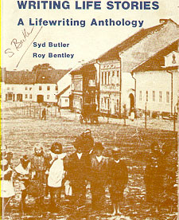

WRITING LIFE STORIES
A Lifewriting Anthology
by
Syd Butler and Roy Bentley
Centre for Continuing Education
The University of British Columbia
Vancouver
1988
CONTENTS
ACKNOWLEDGEMENTS 5
PREFACE 7
Section I — INTRODUCTION
What is Lifewriting? Roy Bentley 11
Sepia Smiles Hilary Rose 15
Section II — RELATIONSHIPS
Birthday Message Anonymous 17
Three Poems Jane Dawson 19
One Last Dance Fran Johnson 21
The Phone Call Judy D. Scott 22
A Letter Judy D. Scott 23
Fatherpoem Margaret Fogg 24
The Doubt Lingers Marcy Jackson 27
Grandma and
Her "Permanents" Kathy Feay 29
Section III — EVENTS
War Years Cobi Raymer 41
An Auction Sale Ruth Gibbons 44
Section IV — PLACES
The Lich Gate and the Lizard Nan Halsey 47
Fall 1987 Cobi Raymer 50
A Place for Everything Eunice F. Fleming 51
The Solitary Swinger Ella Cail Smith 52
A Very Special Time Heather Fair 53
Section V — REMINISCENCES
Echoing Beatrice Kerwood 55 An Irish Wake Rachel Houghton-Brown 57 Franklin Slippers Marcy Jackson 60
Custard for Ten Grace Wood 62
The Gold of Another Realm Beatrice Kerwood 64
Section VI — NEW UNDERSTANDINGS
Journeying Marie Brown 67
Lucy's Wedding Alfreda Steindl 69
Ecology Margaret D. Ennenberg 72
Special Friends Joan Rogers 73
A Transformation Hanny Ekelund 75
Noise Margaret D. Ennenberg 77
The Humiliation Joan Pedersen 79
Gypsies are People Too Marion Williams 85
Inderjit Nan Poliakoff 89
Section VII — CELEBRATION
February 6th 1988 —
Perspectives and Prospects Sydney J. Butler 97
GRAPHICS Photos by Jane Andersen 16, 26, 54, 59, 71, 88, 90
Photos by Tara Butler 34, 36, 38, 28, 61, 74, 78,
87,92
ABOUT THE AUTHORS 105
REFERENCES 111
INTRODUCTION
What Is Lifewriting?
Autobiographical publishing, like religious publishing, is a growth
industry. Twenty-five years ago, John Grigg, writing in the Sunday Times (28
February 1962), said: "Autobiography is now as common as adultery, and hardly
less reprehensible." Since that time the growth has continued and the disdain
dissipated. The range of autobiography has also increased from the "My Story"
approach of celebrities (the revelations, as one sage put it, that reveal nothing
bad about a writer except his memory), to include the vanity press publications
(show-and-tell books, usually designed to be handed down to future generations of
a family), and the formulaic, fill-in-the-blanks book that is the writing
equivalent of a paint-by-numbers picture.
It is not clear if the current popularity of biographical and
autobiographical books is simply evidence of interest in people, about who they
are, and what they believe, or a desire for information about others' achievements
and lifestyles — or even a search for generalizable patterns that might apply to
one's own life.
There are problems however with the use of the word "autobiography" applied
to a piece of writing. First, to many, it suggests the idea of a historical and
factual account of one's life, and second, it establishes the mindset of a long
work, where the whole life must be told, and told in chronological order. For
this reason, we advance and adhere to the term "Lifewriting."
Lifewriting, as we note in the introduction to our book "Lifewriting: Self-Exploration through Writing and Life Review, is simply "the putting down on paper
of memories, experiences and thoughts about one's life or even just about an
event in that life." We suggest the expanded range of Lifewriting:
autobiography; at the other, it is the capturing of a
wisp of a memory in three or four lines of prose or
poetry. It may even be the jottings that result from
talking about events from one's life. These
compositions need not be past-oriented — they can be
about the present (something that happens today) or
about the future (our dreams and hopes, possibilities
and opportunities). And, of course, the exploration
need not be bound by facts; it can look at the
emotional history of one's life. Lifewriting in short
can deal with the motivations and reactions to present
living, or with possible, probable, and even fantastic
futures.
In other words, Lifewriting is not that form of
Servant defines as an obituary in serial form with the last
installment missing. Or, at least, it need not be. Of course,
there can be historical or factual explanation, but there can
also be philosophical self-analysis — and there is certainly
opportunity for fictional (or poetic or dramatic) self-expression.
The text conceivably could be a source for social studies, or a psychological self-analysis or a piece of creative writing. Creative writing, with the idea of its being fiction,
seems at first contrary to what Lifewriting is all about, but the
relationship between autobiography and fiction is not really that
straightforward. Not only might the writer use a fictional event
or person to symbolize or transcend an experience, but he might
create things and people to convey a very real mental and
emotional state. But even in the attempt to be strictly accurate
in a depiction of people and events there are problems. First,
there is the perception as received, accurately or inaccurately,
by the observer at the age and in the environment that existed at
that past time; second, there is the selectivity, or even
editing, of attention and memory within the observer; and third,
there is the viewpoint of the present. As Wilhelm Dilthey says:
unity of my life only by recollecting its course.
When I do this, a long series of processes then acts in
concert in my memory; not a single one of them is
reproducible by itself. Even in my memory a selection
already takes place . . . . Now that I think back, the
only aspect of what is still reproducible for me that
acquires a place in the unity of my life is what has
significance for my life as I now see it. It is just
through my present view of life that each part of it
that is significant obtains, in the light of this view,
the form in which I view it today.
makes clear in the foreword to his book of "autobiographies," Time
and Time Again:
for narrative shapeliness. The writing of a story may
often enough begin with the writer's imagination being
seized by a specific person, or incident, or anecdote,
or scene, or idea. But in order to give shape and
meaning to what would otherwise remain a mere fragment,
he has to go on to ask himself . . . a series of
leading questions which inevitably attract previously
unrelated images, fantasies, and emotions . . . . The
form it assumes as a result of this process is
frequently very different from the one originally
envisaged by the writer; the germ from which the story
originated may by then have been lost entirely or
perhaps have become unrecognizable to anyone other than
the author himself.
The fascinating aspect of life review is that the events are
As J. P. De Waele and R. Harre found in examining the use of
autobiography as a psychological method, discoveries about one
event leads to other discoveries:
and the investigator, lead to more remembering and to
accounts which may be used to amend and modify the
earlier constructions, thereby eliciting new memories.
Moreover, the individual's past is not a relic carried
along from early to later periods in the life-course.
Quite the contrary, it is part of the living present,
continuously affected by actual and future concerns.
The individual's past is differentially forgotten and
refused; what is remembered of it is inevitably subject
to continuous modification . . . . Thus, the past not
only makes us, but we also make it by putting pieces
together into a more or less coherent whole.
What lifewriters find then is an inexhaustible mine of
started out as a seemingly simple need to share memories, to pass
on stories, to pin a happy or unhappy event on paper, becomes
something much more. As we note in the opening chapter of
Lifewriting:
reason they start lifewriting — the attempt to recapture
the past becomes not only interesting but also
rewarding as they begin to find certain shape and order
in their lives, as they begin to speculate on what made
them what they are. At the deepest level, they begin
to find patterns and purposes and meaning to life.
Along with this realization many discover that they can
transfer angers and hates and joys to paper — they write
the demons out, settle old scores, come to terms with
old griefs, and by so doing they begin to feel that
they can more easily cope with them. As someone once
said, the paper they write on becomes the blotter to
soak up powerful emotions.
The workshop provides the forum for all this to
take place. Even for those who prefer to work
privately at getting words on paper, the workshop
becomes an enabling structure, a place to get the
creative juices going and a place to keep them flowing.
It stimulates not only ideas but also the desire to
write; it helps not only in coping with, and even
conquering, writer's block but also in regulating the
actual writing, by forcing the participants to produce,
and to produce regularly, not just when "inspiration"
comes.
The workshop works because it provides a social
context. It is a place to gather with like-minded
people coming together for similar purposes. It is a
place certainly for "show and tell," of remembrances,
of writings. It demonstrates clearly the value of talk
and questioning and it provides peer assistance through
encouragement and criticism. Above all it involves the
participants in the process of writing and takes their
eyes off a too early concern about product, that is,
about producing the perfect and final piece of writing
right away.
as a number of pieces produced in a writing class. These are
products of a spiritual journey, an emotional reconciliation, a
quest for understanding. The process has been the important
consideration in many ways but the product — the piece of writing
— is what freezes things for contemplation and reflection. The
important point is that most of the writers were not skilled
writers to begin with — and the objective of the workshops was not
to teach merely a series of skills but to work on experiences
that had meaning to the participants and that they felt strongly
enough about to communicate to others. The initial description
of our workshop, for instance, said:
with an active exploration of one's own personal
history. Through the reconstruction of past
experience, important people, places and events come
alive and associated stories become available for
communication and publication.
primarily a writing course; it is not an exercise in historical
reconstruction any more than it is a venture in therapy, although
there may be historical results and therapeutic benefits.
Priscilla Pierre Ebersole, in "A Theoretical Approach to the Use
of Reminiscence," posits many functions of reminiscing in
general:
limitations,
expression of the individual's experience,
to these functions — but most of all we can witness to and rejoice
in some very effective and compelling writing! And this is from
people who are not professional writers. Accordingly, the pieces
should be valued in terms of what they set out to do. Each piece
is not in competition with anything; it is a striving by the
writer to pin something meaningful on paper for the first time.
The writings have been arranged in five major categories:
Relationships, Events, Places, Reminiscences, and New
Understandings. The categories are arbitrary and subjective.
Obviously, some of these stories could fit in more than one of
the categories; some might be more appropriately called "Coming
to Terms" or "Exorcising Demons". But the headings are
appropriate rubrics for lifewritings. Surprisingly, categories
that are powerful in Lifewriting programs, such as People or
Portraits (as opposed to relationships with people) and Turning
Points (in life) did not emerge as major themes in these samples.
The first piece, by Hilary Rose, developed from the
contemplation of a collection of sepia photographs and entitled
"Sepia Smiles," is perhaps the only example of People through
evocation of family and friends. It is presented at the end of
this chapter to unlock the door to the lifewritings that follow.
Some of the writings are focussed attempts to recapture a
tiny incident that sticks in the memory and some are powerful
evocations of sad or tragic events. They all demonstrate the
abilities tapped by the processes of Lifewriting.
SEPIA SMILES
(On Looking at Family Photos)
Hilary Rose
Sometimes when I look at you, I don't know who you are. Oh, I know your
names but I don't know what's behind your sepia smiles. The happiness, the joy,
the sadness, the pain of death after death after death. What do you have to
smile about? What is it you're not telling me--you and you and you-- laughing
baby here, pensive father there, smiling grandfather and not so smiling
grandmother. What secrets have you locked away forever behind this pane of
glass?
What are you, really? More than just a composite photograph of family
spanning almost a hundred years of Roses--pictures from six different cities in
two separate countries and across five generations. From that first wedding
picture taken in Southampton in 1872 to the most recent snapshot of my brother
Tony, sitting on our 1960 Dodge, probably as late as 1966. A hundred years of
Roses captured forever on film, held in place by a single pane of glass and
imprisoned on the wall of my living room.
I hardly know where to begin. I know I can look at you mesmerized,
seemingly for hours on end. First, the colours--all black and white photographs
but no two the same hue. The most recent shots, of my generation, have almost a
blue tinge to them. The older ones are mostly sepia, but even here there are
differences--the range goes from grey to yellow to brown. The portrait of my
grandmother, age ten, in a photographer's studio in Winnipeg at the turn of the
century is noticeably pink. So from blue to grey to yellow to pink to brown-these are the colours of my relatives as they stare at me from my living room
wall.
Here is my father looking impish at age five (who would've ever thought of
Dad as impish?), so impish in fact that my great-grandmother is keeping a
restraining arm on him. Over there is my brother Chris, age one, looking angelic
as he's never looked since. Up here, my grandfather is looking wistful in the
hammock with one of the dogs cradled in his arm on his chest.
Here are my great-grandparents on their wedding day in 1872 in Southampton ª my great-grandfather in his uniform of the 5th Regiment of the Lancers, rank:
corporal; my great-grandmother in a hoop skirt looking a little less dour than
she does in subsequent pictures. There she is, five children later, dressed in
the most marvelous bathing costume, no longer in Southampton but at Victoria
Beach on the shores of Lake Winnipeg.
Also in uniform (and interestingly enough, also on their wedding day), are
my parents. My father's uniform cap is an improvement over the pill-box my
great-grandfather wore. My father's rank is an improvement too: sergeant. My
mother (in the only picture I have of her) is laughing. Her rank: private. The
two of them are about to depart on their honeymoon in Jeep No. 100.
Here is my grandmother holding her first baby--my dead uncle Donald named
after "his• dead uncle Donald, another man in uniform who is not, unfortunately,
represented here. Down here there's another baby who bears a strong resemblance
to me, in feature if not in mood. This baby is a happy baby.
What can you tell me? About myself, about who I am, about where I come
from? Sometimes I think that in order to come to terms with my present, I need
to understand my past. And not just "my• past, but my parents' past and the past
of my grandparents as well. What can you tell me? What do you have to teach me
about living and loving and dying? I think you know some of the answers. I
believe some of the answers are locked away behind this glass barrier and behind
your sepia smiles. And somehow I think if only I looked long enough, if only I
stared hard enough, then I could know the answers too.
SECTION II. RELATIONSHIPS
BIRTHDAY MESSAGE
I named you Matthew — gift of God.
On that October day
We two exchanged gifts:
I gave you life,
You gave mine back infused with wonder.
I only wish to say,
Though my arms cannot hold you
From your nightmare shadows,
Nor greet your waking to each new day,
And though I'm not there to scold you
When you wander,
Nor to watch with tearful awe
The daily blossoming of your being,
Just know,
Every year, in the candle-lit reflections
In your birthday eyes,
There is one flame,
My love,
That never wavers,
Never wanes.
Those gifts we exchanged
On that October day
Bridge all distances.
Your Birth-Mother
Jane Dawson
The first time I saw my mother
cry, I
saw
teartracked cheeks
and carrot peels
curled in the sink
and water from the tap washing
over my mother's hands
washing
over
and over
I saw
water
running and
running
like tears flowing and
flowing
we were
moving in water
not breathing
in unfamiliar light. My
mother turned the tap
off
and told me
to set the table.
The Two of Us
to-
gether:
lifejacketed
landless
between two shores.
Up front
I listen back:
"those trees ahead --
that's where we're going"
"paddle harder"
"O look! a loon!"
O yes. I follow
forward to the trees
and see soundless the loon
dive,
disappear.
All I Know
All I know...
is
the name
they gave me.
My own name
is
a wild dance
beneath
the rising
moon.
Fran Johnson
"I remember dancing to the Dorsey Brothers in Detroit, that was when I was
stationed in Chatham waiting to be shipped overseas." My father was telling me
this story. I'd heard it many times before. After Mass nearly every Sunday for
approximately two years while I was growing up, my father and I would waltz to
the hits from the 40's on the radio, even though it was the early 60's.
I remember sometimes taking off my shoes and gliding around the living-room
floor on my father's feet. He was an excellent dancer and very easy to follow.
We presented a strange picture when we danced. He was 6'2" tall, so at twelve
years of age I had to reach very high to place my hand on his shoulder. His
shoulders and arms always felt lean and very strong. I recall his large hands
holding mine; his felt rough from repairing other people's pipes. I felt special
dancing with him those mornings. I didn't consciously think about the ritual; I
simply enjoyed dancing with him and listening to his recollections of World War
II. It must have been a unique time in his life. He was from a small town in
Alberta and used the war as an opportunity to attend concerts and dances given by
musical celebrities he had only heard on the radio.
The songs my father and I danced to: String of Pearls, Paper Doll, Body and
Soul, My Blue Heaven, I knew as well as I knew the popular songs. My father told
stories of talent. I heard how Gene Krupa's hands moved so quickly when he
played the drums they were like a blur. Years later on the Ed Sullivan Show I
saw Gene Krupa perform and my father had been right.
My mind always travelled back to those Sundays whenever I heard a song from
that era. This was the case one night when, at a friend's house having dinner, I
heard a portion of a song playing in another room. Something about it reminded
me of my father and I recounted to my friends the story of the Sunday waltzes. I
hadn't thought of that incident for quite a while and I was surprised to have it
unearthed that particular evening. The next evening, in a different city, my
father died of a heart attack--dancing.
THE PHONE CALL
Judy D. Scott
I was seventeen at the time. I can remember my mother answering the phone
in the kitchen. It was a short call but I knew something was wrong by the strain
in her voice. Going to the kitchen I glanced over just as Mom was hanging up the
phone. She was pale and obviously shaken.
"Who was it?" I asked, suddenly feeling scared.
"It was a member of your father's church. Dad was seen in his office with
another woman." She began to cry.
"They were...," and before she could finish she collapsed at the table,
overcome by emotion.
I wasn't surprised. Unknown to Mom, Dad had tormented my nights for some
time now. He would come to my room on the pretense of a fatherly goodnight and
then subject me to incestuous foreplay. God, he revolted me, but I was so afraid
of him. Mom could never know. This was her husband, a church minister, an
outstanding community member.
I looked to my mother. "You're so ignorant," I thought to myself. Out loud
I said, "I'm really sorry."
She looked at me, her eyes full of pain, red and swollen. She suddenly
looked very old. We both knew there would be dreadful consequences. Awkwardly, I
clutched her to somehow ease her pain but I felt cold and void of emotion.
"You've done it, you've finally done it," I thought blankly.
"Everyone will see your deception and know your seditious secret. You'll
be kicked out of the church."
In the days following, we received many more calls. Some were obscene, some
threatening, and very quickly a sense of desolation spread through the
household.
Dad had a heart attack, Mom was always crying and I left home locking the
doors forever on my childhood.
A LETTER
Judy D. Scott
I was young.
At the time I couldn't see your pain and shrugged away
your supplication.
I felt misunderstood and your words were false
to my eyes.
And though I sensed sincerity in your plea
I could only see the hypocrite that you were.
Time has passed and I've grown and I feel
your absence.
A departure finalized by death that has left me with only
your words.
And now when I read those worn and faded pages
I am moved.
Through all your inner turmoils and complexities
I see truth in your lines of thought.
And I want you to know, dear father
FATHERPOEM
Margaret Fogg
their daughters
who fear
themselves (touch kills)
comes in dreams
eyes and emotions passing through
in silence
(he never had words).
father
I am small; you love me. I grow; you ignore me.
father
When I am left alone in the house, I hear breathing. I follow the sound to where
it is loudest: your side of the big, empty bed.
Reaching out, I pat around a cold space with my hands; I follow it
with my cheek.
father
Daily, black grime and rubber smell from the mill. Fast meals and evening
television. Familiar jokes told to familiar gatherings.
father
Coaxed and threatened, you come to my high school graduation. You swear loudly
and complain. Next morning mother gives me a note:
"Just a token of how I feel of having seen one of our own children receive
individual awards such as you did makes me feel proud and thinking of raising a
family was well worth the effort. Once again honey as you know I was always poor
at making a speech so this will in some way compensate how I feel.
Dad."
There is a two dollar bill in the envelope. I kiss you thanks and you stare
straight ahead, unspeaking. I tear up the money.
It is as close as we came, papa.
father
I leave home. You get sick. One heart attack. Another. After 24 years, you
are too weak to do your job. The boss offers you another: janitor. You take it.
From foreman to toilet cleaner. Another heart attack. A stroke. Eventually, no
one counts.
father
Pale monster in a hospital coma. Left with me, you wake. Your eyes, terrified,
seek answers I do not have. You grasp at air but refuse to touch me. You cry
out: "I want...I want..." You turn blue, yellow, green. Cold.
father
Morning after morning, I encounter your eyes in the mirror. I learn to brush my
teeth and cry without losing time. I carry your dying form with me in cars, on
picnics, at work, everywhere.
father
You enter the house when only I am looking. You sit in your accustomed place
and, grinning, choke to death and putrefy. I watch until even your bones are
ashes.
father
I walk toward you, across a sun-warmed field of tall grass. You are smiling.
You put out your hand to me.
I have no more dreams.
father
I will follow you. I will
be you,
to find
out if you were hiding, or
if it is true what I've been told:
you were never really there.
THE DOUBT LINGERS
Marcy Jackson
I broke the vase
and blamed my brother
The first guilt wasn't when
I stole a piece of bubble gum
The first guilt was when I
wished my grandfather dead
and
he died.
fault."
"When were you grown, Mum? When was that? When did you know? Did you ever know? If it were me I'd always have that feeling--that little bit of doubt--I
mean, there's always that chance that maybe it was your fault."
When my grandfather, who we called Papa, died, my grandmother came to live
with us and she slept in my room. I was so happy to have my grandmother with us
but I felt guilty that I was the cause of Papa's death.
I was ten and Papa had been sick for years. I remember the eighteen months
he was in Muirdale Sanitarium for TB and we couldn't get close to him but stood
on the grass a long distance away waving and blowing kisses. I remember once
not being able to help myself and running to him as he stood in his pajamas and
striped robe in the sunlight and throwing my arms around him and his crying. He
was my favourite person, I never heard him raise his voice or call my grandma
anything but "dearie." Papa was the most gentle man I ever knew. He was tall
and thin, had long bony fingers and smelled of Camel cigarettes. I would climb
onto him in the small front room off the living room of their apartment and I
could never hug him hard enough.
I knew nothing of death. When I was ten Papa had been in hospital for a
week or two and one night before I fell asleep I wondered what it would be like
if he died--what would happen--and I thought and whispered "I hope he dies so I
can see what happens."
I started crying to myself in bed that I didn't mean it and I prayed to God
to forgive me and was convinced I was a truly wicked person.
The next day around four in the afternoon I watched my mother pace back and
forth in the kitchen and I said, "Can I make you some tea?" Then the phone rang
and I knew.
I heard her say, "Yes, yes, yes and yes, thank you for calling."
And I said, "Mom, here's your tea," and she said "Thank you dear but I don't
think I want any right now. Papa has just passed away."
And I started to cry and she hugged me and said it was better than if he had
suffered a whole lot and I don't remember her crying but she blew her
nose.
She told me long after that it took her years to cry but I cried enough for
us both and I thought because I had said those awful words the night before that
I had made it happen--that I had willed him to die and I wanted to die and I
couldn't tell anyone or they would have hated me and thought me evil. And none
of us children could go to the funeral and I didn't get to say goodbye.
It wasn't until I was grown that I knew it wasn't my fault that Papa
died.
But my son who is named for him and so like Papa in his gentle ways, said,
"Maybe it was."
GRANDMA AND HER "PERMANENTS"
Kathy Feay
She stood, little more than five feet tall, a sparrow-like woman with a
lithe, boyish figure and a still dark head of hair. Her eyes were alert and
seemed to spark and dance as she moved or talked.
This was my paternal grandmother in the early 1950's. Her life had not been
an easy one. My grandfather had been killed in action during the first world war
leaving grandma with three young children.
Grandma turned her large, old, draughty home into a theatrical boarding
house. In those days, the two local theatres had a diet of a weekly variety show
or a play. From the review theatre came an unending stream of small-time comics,
frustrated opera singers, wobbly ballerinas, animal trainers and the
like.
The Playhouse had a small permanent cast of regulars augmented by the
occasional guest artist.
Grandma's "permanents" were a married couple--The Herbert Evelyn's--the
backbone of the repertory players.
Herbert would be manager, actor and even theatre sweeper. He had the manner
of the old-time theatrical. Expansive gestures, resounding baritone voice and
corpulent body. His hair, swiftly departing was licked as best he could into a
thin cover atop his head.
His wife, Madam Evelyn, no longer acted as her voice had "gone". She
rasped and wheezed, though occasionally was heard trying vainly to sing her
scales. Again, as if part of another era, she languished in handkerchief point
dresses, fading perfume and heavy make-up.
Their world at grandma's was the one large room they rented, with use of
bathroom. That room was a treasure chest of faded furniture, books, knick-knacks
and plastic flowers. I thought them such a romantic couple! However they were
much too busy to befriend a child such as I. Their mystery and allure were only
increased in my eyes.
Temporary boarders came and went, and through it all grandma sat in the dark
back living-room reading, chatting and overseeing all.
The rules of the establishment were strict. All guests had to prepare their
own meals on tiny gas-rings in their rooms. All rooms had to be neatly
maintained and no callers after 10:00 p.m. please!
The visitors book was a joy to behold. All the guests passing through were
required to sign the book. I remember lots of lyrical verses, promises to return
and even a paw print.
Another permanent was a shy, Irish girl, not theatrical in any way except
she played the accordion. Her front upstairs room I visited regularly and noted
her collection of crucifixes and religious memorabilia. Sweet and kind, she sat
in her haven and told me about her new boyfriend.
Johnny was good-looking, charming and funny, and I was overjoyed when the
engagement was announced: what an exciting time we had talking about
the wedding.
It was not to be. After the trusting Mary had signed all her savings over
to Johnny to buy a house, he disappeared with everything. Mary was heart-broken,
grandma was philosophical and my dreams of being a brides-maid evaporated into
thin air.
The last of the permanents was an Italian gentleman called Rico. I knew
little of him except he had come to England to try to make money to
send home.
Rico was the only boarder allowed into Grandma's inner sanctum. They would
often be seen sipping tea together and I learnt my only Italian from him, a
phrase which I think meant: "Would you like a cup of tea?" I always thought he
would marry grandma but he eventually returned to Italy and his wife.
No wonder grandma's house was a place I escaped to whenever I could. It was
a wonderland for a child, sometimes scary, dark and old-fashioned, but lit up by
the laughter, chatter and humour of both the permanents and the temporaries. The
corridors and corners echoed to music, tantrums and recitations. Grandma
presided like a queen over an empire.
Over the years the permanents moved on--Rico back to Italy, Mary to marry a
new young man and the Evelyn's to die within months of each other in their late
seventies.
Grandma retired and bred budgerigars. Also she became a cocktail waitress
at a dubious establishment but that's another story!
SECTION III. EVENTS
Tiong Lauw
Indonesian rains are like no other rains, they fall to earth in heavy sheets
obscuring all. Yonas and I, engaged in serious conversation, were not
consciously aware of the rain, but unconsciously we sensed the danger in the
torrents pelting the road. My car threw showers of water into the air as we
drove the narrow road to Surabaya. My fingers tightened on the wheel as we
spoke of what we would do when we arrived in town. My back and arms ached with
tension as the heavy pounding of the rain continued. I was exhausted, both
physically and mentally. We had driven for more than four hours through the
storm. I listened to Yonas, but my mind wandered to Surabaya and home, to my
bed, and to sleep and rest. Without thinking, as if motivated by some
unconscious desire to be home, my foot pushed the accelerator harder, and the car
responded quickly. It seemed as if we were on an earth-bound jet, flying through
the clouded darkness. I heard Yonas ask me a question, but I could not answer.
I could not answer because what I saw ahead of us at that moment was terrifying.
There, coming from the opposite direction, was a truck, and behind the truck was
a motorcycle, overtaking the truck, passing it, unable to see me in the rain,
heading directly for me.
In movies, scenes like this are played out in slow motion. On the road to
Surabaya, I had barely time to hit the brakes, to set my car into a grinding
skid, before the motorcycle and its two riders slammed into me. I can still see
them and the motorcycle flying through the clouds of rain, hitting the asphalt
road. My car, twisting in large circles, finally stopped. And all was quiet,
save for the rain pounding on the metal roof of my car. Yonas and I looked at
each other. We opened the doors and ran to the two motorcyclists now lying on
the road. The motorcycle, mangled beyond recognition, was in a small ditch at
the side of the road. We ran to the two men.
I stood over the first man, rivers of blood dissolved into the rain. I
trembled, too shocked to do anything. The sight of blood, the bodies of the
victims lying helpless in the road, the memory of the horrible sounds of the
crash, knowing I could have done nothing to avoid the accident, and my sense of
agony, filled me with a bitter sick feeling.
I noticed that villagers had begun to arrive. They looked at Yonas and me
with a hostility I have never known before. I could tell they thought it was our
fault. I tried vainly to explain to them what happened. They didn't seem to
understand. Anger filled their eyes. One, a young man, picked up a large stone
and began slamming it on the side of my car. Yonas and I got in and locked the
doors. The villagers crowded around us. We could feel the car move as they
pushed forward, trying to get at us. The distant sound of a siren announced the
arrival of the police and an ambulance.
I will always remember that night. It took me a long time to be able to sit
behind the wheel of a car without shaking. I was relieved, some time after the
accident, to hear that the two men were all right. Often, as I fall asleep at
night, I see myself driving down that road. Each time I dream, I try to change
it, but I am unable to change what happened. I will always remember the night,
the rain, and the lives that could have been lost.
THE STORM ON INTERSTATE TEN
Violet Williams McDermot
In the first hours the desert was an enchantress with golden light and
scented breath. She wore a profusion of multi-hued blossoms and shrubs from
which small birds took flight as we passed. We were charmed by her beauty,
knowing nothing of her vagaries, her hostile moods.
We were travelling by car from Las Cruces, New Mexico, to Tucson, Arizona, a
journey which normally takes about six hours. As we neared the agricultural
inspection station at the state border, the wind came up scattering debris and
sand about under a threatening sky.
"Having a bit of a blow," said my husband to the official on duty. The man
nodded. "'Tis late for the time of year, though," he added. Pronouncing the
oranges we carried free of disease and wishing us a good trip, he waved
us off.
Reassured that the weather was nothing to worry about, we drove on. At
first we were amused by the antics of sagebrush which came leaping, and rolling
towards us. Some sailed by while others scrambled noisily about under the car
before breaking free. But we soon found ourselves locked into the grey world of
a desert sandstorm.
The next hours were a nightmare as we crawled in funeral procession between
two eighteen-wheeled tractor trailers. The red lights were our only guides. I
was terrified they might crush us. I saw our car as a coffin in which we lay
entombed under the sand. The wind pushed and shrieked at us, rising and keening
to an unholy pitch, then subsiding to soft moans like someone tormented. The air
in the car became heavy, claustrophobic. We hardly spoke for Dee needed total
concentration to maintain our position between the two trucks. I thought of our
family back home, and wondered if we would ever see them again. I watched Dee
straining to see through the gloom while his hands gripped the wheel. And I felt
useless. As the hours crept by I longed to do something, anything to break the
tension. We'd eaten nothing since breakfast and the lunch we carried was out of
reach in the trunk of the car. Then I remembered the oranges, the big beautiful
oranges lying on the back seat. I carefully peeled, and fed juicy segments to
Dee, thankful I'd been greedy enough to purchase so many.
Suddenly we drove out of the storm into blinding sunlight. We felt
exhausted, but elated like prisoners who'd tunnelled their way out of prison.
Flinging open the windows we savored the fresh, clean air, and the feeling of
freedom as we sped towards Tucson. It had taken us eleven hours to do a six hour
trip.
We escaped with a sand-blasted windshield and license plate; otherwise we
had nothing to show for those frightening hours. But Death had stalked our route
that day claiming three lives when a car left the road and rolled over.
SCARED IN SWEDEN
Ruth Hasman
"Do not read this at night"
"Do not read this alone"
These warnings stood out boldly on the cover of the book that was handed to
the teenager.
"I'm sorry," said her Swedish 'father.' "It's the only book we have in
English."
"Thank you," she said reluctantly. Having read all the books she'd brought
from home in California, she had no choice.
The teenager was spending the summer with a Swedish family on an island in
the archipelago off Stockholm. Her Swedish family lived in a hundred year-old
farmhouse. Not much had changed in the past hundred years. They cooked and
warmed themselves by a wood-burning stove as they ate and read by their kerosene
lamps. The only modern convenience was the telephone to the mainland.
She planned to read the book that night. So she said to her family, "If you
hear any screams tonight, you'll know it's only me."
"Good night," her family said before going upstairs to bed.
"Good night," she said as she went to the guest room off the kitchen. She
quickly settled under her warm covers to read by the light of the kerosene
lamp.
The words were gripping and she couldn't put the book down. She was so
engrossed in the book that she didn't hear it at first. Slowly the strange
noises penetrated her consciousness. "What was that?" "Oh," she sighed, "It's
just the wind blowing the branches against my window." Those noises added to the
tension building in the air. She was scared, but she couldn't put the book down.
Psycho had her in its power!
Suddenly the door to her room burst open. She stifled a scream. Her heart
leaped into her throat. She slammed the book shut while her heart beat out of
control. She took a deep breath and cautiously got out of bed. She peered into
the kitchen. No one was about! "Oh! Someone didn't shut the outside door," she
sighed. She tip-toed through the kitchen and closed the door. With that
accomplished, she crept back to bed.
"Oh, no," she thought. "I have to go to the bathroom." She did not relish
the idea of going to the outhouse behind the house. "I just can't wait any
longer." So, she put on her shoes and grabbed her lantern. She raced out the
back door glancing from side to side. In fact, she set a new world record for
the hundred yard dash! She leaped back into bed, blew out the lantern and pulled
the covers over her head!
The wind was still blowing, the branches were still scraping her window. I
won't scream, she thought, but . . . I vow I won't:
Read that book alone!
MARCH 15th, 1988
Lenka Lichtenberg
March the fifteenth
But I remember
the biting rain as we
stood there watching them
flood
Helmets so deep
no eyes Straight lines
where mouth should be
Remotely human
not even
Noise Noise Noise
Roar! Sidecars should
stay attached to the black
motorcycles hobbling on
the souvenir pavement
of Middle Ages
Not premonition. Not
animal instincts.
Four legged
were treated better
Cows wouldn't make it
in the cattle wagons
Fear. Unjustifiably
not big enough
But then, nobody could
have imagined
And if so
would have believed
Hope dies last
It didn't It was followed
by most of THEM Even my dog
And why Me? I am
no better and still
Took years to bury the sense
of guilt.
It's been a full seventeen thousand
eight hundred and ninety©eight days
The flood took all but didn't
kill the lonely seed that grew
inside me and out
My shield
Halfway around
Same latitude
My morning is
her night before
Doesn't know it's grey
bitterly wet just like it was
then
Cobi Raymer
The official war years for us in the Dutch East Indies ran from the 7th of
December 1941 till the 14th of August 1945. But that did not mean that our
suffering was over. Far from it, the tragic struggle with the population
started. The Javanese had been exploited by the Japanese during these war years,
many had been sent to fight for them in a war zone, like New Guinea, and many had
been killed. The Japanese were hated not only by the Dutch, but certainly by the
natives of the land.
From November 1942 till the 15th of September 1945 my mother and I spent the
years in three different Japanese prison camps. The first one was Sorabaja along
the Reiniers Blvd., in Darmo. The camp was large, perhaps in excess of 10,000 as
not only Dutch women and children from that city were interned, but also people
from the surroundings and from the plantations. One can not forget the doctors
and dentists, who were of great importance to run our small improvised hospital
in the camp. Other Dutch men, who were not working for the Japanese in the
different business offices during the first months after the capitulation, were
interned in separate camps.
My brother, who was eighteen years old in May, 1942, had been picked up with
his high school friends and marched off to a camp. They landed in Kesiller, a
large peninsula on the south-eastern tip of the island of Java, where they lived
like Robinson Crusoe in the wilderness, using primitive shelters made
of bamboo.
Mother and I shared our small house on van Swoll Street No. 7 with ten more
people. Most of us slept on mattresses perched on top of trucks containing a few
possessions gathered in haste, before entering the camp.
Our camp was controlled by the Japanese navy, who were supposed to be more
"civilized" than the army. Our camp manager was a naval officer named Takahasi,
who also supervised our grocery store.
Camp life became routine and we all made the best of it. A mother with her
ten year old son were living in the front section of the living-room, an elderly
nurse in the other, separated by curtains. My mother and I were using the first
bedroom, while a woman and her two daughters occupied the second. In the garage
lived a woman with two active boys of ten and twelve, while a small servant room
housed our most cheerful occupant, who was busy in the kitchen each day, making
delicious fondant in many flavours, which she sold in the store, giving her
enough income to live on.
Towards the closing of the year 1943 rumours spread through the camp that
soon people would be sent to other camps and also that some of the women were
going to be used to fill a brothel that the Japanese were preparing outside the
fence of our camp. We actually could watch them through the woven bamboo
enclosure, which was double-walled with Javanese "Hi-Ho's" (nickname for
Javanese working in the Japanese Army) keeping guard in between, while marching
around the camp.
One day Takahasi began his check-up of all the women in the camp. When he
came to our house I was scrubbing the bathroom floor, my chore for that day,
looking rather dishevelled and sweaty. Each of us had to show our face and give
our name. We were asked if we worked anywhere in the camp, in the store maybe
or the hospital. All my answers were negative. Then Takahasi scribbled in his
little book and left, dragging his sword behind him. We were all puzzled and
alarmed as the brothel stories were going around with great persistence. One
woman did get detailed news from outside the "kedek," the fence made of bamboo.
She had a friend who was a Hungarian citizen and not interned. She planned to
climb over the fence if she was chosen for the brothel, to escape and be
sheltered by him.
Early in 1944 the transports to other camps started. The women and children
were hoisted onto trucks and had to sit on the floors. Then they were taken to
the railway station and pushed into the coaches. With the windows closed, in
terrible heat, in pitch darkness, with crying children and practically no
sanitation, with only the food they had brought themselves, they slowly travelled
through the night with many long stops until they reached, at last, Semarang, on
the north-coast of Middle Java, in the early morning.
There, several Roman Catholic churches and adjacent schools had been
prepared. South of Semarang more camps had been readied, among others the
notorious Ambarawa, a fortress that was now a prison.
After nine or ten thousand women and children had left, only about two
hundred remained in the camp, my mother and I included. It was eerie as the camp
seemed completely empty and very silent.
A couple of days later we were ordered to appear at the main office in the
camp. This was run by several Dutch ladies, also by some of my girl friends.
While waiting, some cars arrived and about ten drunken naval officers entered the
office, where they gathered around an oval table. The women were called in one
by one. The mothers of some of the women who had been allowed to stay, to dispel
the rumours, were first told that they had to go on transport. So my mother had
to leave, and I had to stay. After a couple of hours about a hundred and fifty
young women had been chosen. It was now noontime and the heat in the office
became oppressive. The tension grew, the women were very edgy and worried, while
milling around the office and talking to each other, trying to find
a way out.
A few German women, who lived on the inside periphery of our camp and who
had daily contact with our oppressors, asked to be allowed to stay in exchange
for some of the Dutch women. But for some strange reason, none of their requests
were accepted. With time the turmoil in the office increased, many mothers were
crying openly. Most of the chosen women for the brothel came from good families
and some were very young.
I wondered how to get out of this predicament. I felt that my only chance
was to obtain a note from the doctor that I had been sick a few months earlier
with pleurisy. The Japanese are scared stiff of any contact with persons who are
not healthy. I was lucky. My doctor was in our building and although the
medical records had already been sent to Middle Java, she wrote me a note
informing the reader that I had been sick with lung disease.
An office friend willingly passed the note to one of the Japanese Officers
and whispered something in his ear. He looked at me in disbelief, and growled
his impolite "UGH!" I was waved away, I was not accepted, I was free! I could
not believe my luck! My mother and I ran home, where I stayed on the divan till
we left a couple of days later on transport. In case we were checked, I kept a
glass of milk with me and darkened my eyes with mascara to look quite
sick.
Our small transport left towards the evening. The women who had to stay in
the camp followed us with reproachful eyes. We felt sorry for them, but on the
other hand we were relieved.
On the train I met my friend who had handed my doctor's slip to one of the
Japanese. I was still puzzled because it seemed so easy to get away. She told
me that she had mentioned to the Japanese that I was so ill that I actually had
to be isolated in the T.B. house in the camp where the serious tuberculosis cases
had to stay. No wonder the Japanese looked at me with disbelieving eyes as I
looked the picture of health!
My mother and I were so thankful for my friend's help. We gave her a tin of
fifty special cigarettes to show our appreciation. It was not much. I wished I
could have given her more, but this was just one of a few luxuries we still
carried in our suitcases.
The women who had been kept behind in the camp were released six weeks
later, after they had "cleaned" the houses in the camp. One of the Scandinavian
consuls in Soerabaja had pressured the Japanese to let the women go, as they were
not treating these prisoners according to the Geneva Convention. Thank God that
we were under the Japanese navy, for they did listen.
Although these women were sent to different camps in Middle Java, at least
this dangerous episode was over for all of us.
AN AUCTION SALE
Ruth Gibbons
One day my husband took me to an auction sale. This was quite an experience
for a city girl.
As you probably know, they start off with all the old junk from the barn and
work down to the goodies and interesting items.
All of a sudden the auctioneer shouted. "I have here over a hundred
beehives, old but still good and a large stainless steel honey extractor. "Who
will bid $200.00 for all this equipment?" Not a sound was heard. "One hundred
dollars," he called. Still no replies. "Fifty dollars," he shouted. Still no
bites. "Twenty-five," he bellowed. "Is no one here interested in raising bees?"
By this time my husband gave me a knowing look. He knew that I had always wanted
to raise bees. "Please," the auctioneer shouted again. "Someone bid something."
Up went my hand. "Five dollars," I called. The auctioneer looked at me and
said, "Oh lady, how could you?"
Home we went with all the bee boxes piled up in the back of our Datsun truck
and piled them in the barn. When looking them over one day I decided it was a
lot of hard work to clean them up so in the barn they stayed.
One day a visitor spied the bee boxes in the barn and asked my husband who
they belonged to. "My wife," he said. "Would she sell them?" he asked. "We'll
go up to the house and ask her." "How much are they worth to you?" I asked.
"Would you take $75.00?" "Sold," I said, but didn't include the honey extractor.
That later sold at our auction for $35.00.
That spring we went to the city and bought new equipment for one hive and
what an interesting time we had raising bees, and this time I got stung.
SECTION IV. PLACES
(Butler)
Nan Halsey
Sometimes our subconscious discards reality and can only be jolted into
focus by shock. Here is how it happened.
When my father died our house was sold. The property was bought by a
religious order and black robed monks took over. At times they seemed like crows
pecking at the empty carcass of our house. And, at other times, they seemed not
there at all. For the house still stood, warm and familiar, like a beacon of
love with a promise of open arms.
Since the sale was protracted, my brother acted as caretaker. He lived in
the old gardener's cottage where previously we had kept the tools and plucked the
chickens. But the cottage had no stove, so he was permitted to use the
facilities of the old house. Often I would visit him and we would sit in the
large bare kitchen, perched on the edge of boxes like two mournful sparrows,
forks clacking in the resonance of empty space.... And we dreamed of our
childhood days when the kitchen was the hub of the house.
He reminded me one day, that it was over twenty years since we had watched
as brick by brick, the house grew out of the yellow clay on the lower slopes of
the Port Hills. And in that clay, a remnant of a prehistoric past was found - a
live toatara lizard - and Maoris say that these slow silent lizards are symbols
of peace and happiness.
At the lower entrance to the property, my father built a lich gate - a
covered entrance over the steps leading steeply up from the street. It was
reminiscent of lich gates at the entrance to the old churchyards of his ancestors
in far-away Britain, put there as resting places for the carriers of
coffins.
Then, under the ever-busy hands of our parents, trees, flowers and shrubs
grew up quickly and the scars of new paths softened under a patina of fallen
leaves. Contrasts filled the park-like garden - dark with light, shade with sun,
coolness with warmth. It all harmonised with joy and sorrow. Sorrow, since
after only one year there, my mother died and father alone brought up the
children.
Years rushed by and we all grew up and left the nest. But to me, the house
was always home, breathing our breaths and whispering our fears and hopes.
was part of my being - and part of my mother. The 'sale' was a paper blowing in
the wind . . . a cruel joke . . . a worthless gossip.
Then, one summer's evening, I was on duty late at the hospital and missed
supper. So I decided to bicycle the four miles "home" and eat with my brother.
Besides, it was a moonlight night -- almost a full moon and should not take too
long.
The moon, now and again draped with filmy drifting clouds, rose pearly white
and luminous above the city, casting silver lights on roofs and windows.
When I arrived at the entrance to the property, the lich gate was in deep
shadow and looked suddenly sinister and forbidding. Like a tunnel, it was filled
with shifting shapes, hunched and ominous.
Heart pounding, I entered, fearfully forcing myself to ascend the steps to
the shrubbery where the gravel path wound upwards to the house. Here it was a
jungle of strange sights and sounds. Fingered branches clutched at my dress and
cassocked bushes swayed in the wind. The breeze rustled leaves like whispering
voices and soughed mournfully amongst the pines.
Exhausted, I reached the familiar brick house, only to find that the
uncurtained windows looked eerily out like the eye sockets of a skull.
Almost running, I hurried past the house, aided by a clearing moon, and
climbed up to the gardener's cottage and the promise of security. But the place
was strangely silent. There was no light. I hammered on the door with my fists.
There was no response. Was my brother in the old house having supper?
Skidding quickly down the slippery gravel path, clinging to branches on the
way, I rushed to the back door and knocked . . harder and still harder. It too
was locked and there was no light either in the kitchen.
Faced by this bleakness I was gripped by hunger. Somehow I must get in and
eat. My ears strained for sounds but the house stood silent and dark.
Then, as I stood forlornly outside, the naked moon shone brilliantly clear,
high-lighting the half-brick edging of the building. And, above, an open window
winked like an eye in the second story sun-room.
Irresistibly, I was drawn to that brick corner. Stepping behind a big
geranium bush, I felt the rough projections of the edging with my fingers and
memories of childhood tree climbing returned.
Carefully gripping with fingers and toes, I started up the side of the
house, realizing I could only go upwards since descent would be too difficult.
Above, by the blackness of the open window, stretched a wide sill upon which we
often used to lean - but it seemed so very far away. As my grip began to tire
and weaken, I realized the stupidity of what I was doing. But there was no going
back. Shakily I reached the sill, and, with an immense effort, grasped it,
kicked, heaved and finally balanced my body upon it . . half in, half
out.
Clouds raced across the moon leaving shadows of dark and light. Briefly
they illuminated the once friendly room. But what I saw made me limp with
fright, paralysed with a nameless dread. Three sleeping figures occupied three
beds placed like the prongs of a fork. The black, monk-like forms seemed to
breathe deeply together in a celibacy of silence. Strangers! Strangers who were
men, but not just men. Strangers in the heart of our house.
My stomach ached from being balanced on the sill, but inside I ached with
fear and guilt that the monks would awake and find me there. Yet messages were
flashing through my mind like shafts of light from the moon. No longer did I
belong in this house whose maternal heart was still. No longer did it breathe or
whisper our hopes. It murmured other prayers.
And, in this moment of anguish, a pall of darkness fell as the moon sank
behind clouds. But it gave me courage. Swinging my body over the sill, I
tiptoed quietly across the cork floor, past the sleeping figures and out into the
creaking silence of the house.
Reaching the kitchen, I turned on the light. But strangeness was
everywhere. The kitchen was transformed. Carved chairs and tables, stacked with
white plates, were placed neatly in rows. An open prayer book lay on a table.
As I touched a page, the words "Lighten our darkness . . " shone above my
finger.
I hurried to the pantry and ate a sandwich of stale bread. Pretty soon, my
brother arrived. "How did you get in?" he asked incredulously. I told him.
Everything.
"Don't worry," he said, "It was only the monks' clothing on the beds. They
are moving in tomorrow. They told me I would no longer be needed, so tonight I
have found another place to live."
Relief flooded through my mind like warm sunlight. A little later, after a
satisfying hot supper, I said goodbye to our old home. As my bicycle wheels spun
away, my thoughts spun too, like unclogged gears oiled by insight. And my light
shone brightly into the darkness of the night.
Now the monks were welcome to the lich gate - and to the lizard, wherever it
might be.
The parental heart of the house had ceased to beat.
FALL 1987
Cobi Raymer
Balmy October days.
Coppery bronze leaves
covering the grass
along the shores
of English Bay.
Canadian geese, thirty-nine in all,
swimming in straight formation
close to shore, watching the people,
as they watch them.
Walker and joggers enjoying the sun,
Traffic passing noisily.
At night nine freighters
lying at anchor, lights a-twinkle
waiting for golden grain
to be shipped to faraway China
to feed the multitude
of struggling humanity.
Eunice F. Fleming
Though a thing of beauty is supposed to be a joy forever, it does not follow
that a joy forever is a thing of beauty. Many years ago when I was raising my
family, there was something in our house that played a large part in the
formation of good habits, yet by no stretch of the imagination could one describe
it as beautiful, or even very interesting. I'm not sure of its shape; it was
either square or oblong. It was not at all colorful. It had no style. It was
simply a hole in the wall.
But there it was just outside the bathroom door, and almost directly above
the washing machine in the basement. The builder said a laundry chute was an
extra but I didn't care. I would cut corners somewhere else, because I had a
plan.
Aside from its one fault of accepting socks in pairs and somehow managing to
get them divorced before they came upstairs--the laundry chute did not let me
down. The day we moved in, standing with my back to it, I announced to the
children: "You are old enough now to have noticed that I have considerable
difficulty keeping my own things in their proper places. I should not have to
keep track of yours. You each have a nice room with plenty of drawers and
closets, and since you like to hang things on doorknobs, if you hang them at all,
I've put five knobs on the walls. I realize you must walk through the kitchen
or the living-room to get to your own rooms but you must not drop anything on the
way."
I stepped aside and slid back the panel that covered the hole in the wall
and went on.
"If you do you'll know where to look for it."
Those kids were not slow learners. Probably no more than a dozen trips to
the basement to search through soiled clothing for hockey pucks, comic books,
hair ribbons, baseball gloves, roller skate keys, yo-yos, ping pong paddles, wet
mittens, tennis balls, skipping ropes and other things--and they were
cured.
What joy I experience now when I visit them in their own homes. What neat
kids I raised. If only my own mother had a laundry chute, perhaps I would be as
neat as they are.
THE SOLITARY SWINGER
Ella Cail Smith
Near our home is a school with an adjoining playground. There are assorted
attractions for the youngsters - climbing ropes, pulley rides across a wire, and
the old fashioned swings, always a favourite - to name just a few.
Several evenings as I take a customary walk about the neighbourhood for
exercise and fresh air, I notice a lone person swinging slowly in the playground.
With his feet touching the ground he propels himself gently to and fro, to and
fro. His back is to the street and it's impossible to determine if the bulky
figure is a man or an overweight boy.
There is no one else near him, ever. I speculate: "Has he no friends?
Could he be handicapped?"
Farther away but within his view are some boys kicking a ball about and
shouting with excitement. Is he watching enviously and longing to join in the
fun? In the adjacent ball park too are numerous young people playing soccer or
baseball while exuberant spectators occupy bleachers or lounge on the
grass.
What a pity. He seems to be an outcast from society. Or perhaps he's a
natural "loner" and deep in thoughts of his own in tune with the soothing rhythm
of the creaking swing.
Maybe next time I see him swinging so idly I might approach and sit on a
swing alongside so he won't be all alone? Or would he resent the intrusion? If
he's a boy he might. If it's a man, my motives could be suspect as I'm often a
solitary walker, yet not lonely, while my husband busies himself in
our garden.
It might be wiser just to continue my walk while puzzling over the solitary
swinger.
A VERY SPECIAL TIME
Heather Fair
I found a pile of clay bricks that had dried in the sun, sat down and
watched the scene below. It was moving, but to where and from what? The street
was filled to overflow with people on bicycles, carts with heavy wooden wheels
pulled by oxen, donkeys, men and women. With each drop in temperature another
layer of clothing had been added to their stooped bodies making movement a
little more laborious. Dust from the road covered their clothing and faces.
Their eyes were down-cast. I looked a little to the east and saw two old men — one sitting on a stone, (taken from the ancient palace during the revolution?),
the other squatting close beside, sharing a cigarette. Behind me I could hear
children playing. I turned to see what the squeals of delight could mean. They
were playing with bricks, like the ones I was sitting on, watched closely by
their mother. Was that their grandmother I could see inside the courtyard,
grinning proudly at her only grandchild?
Later, on the way to the village, I passed a gang of men and women chiseling
rock from the side of a mountain. They hauled it in wooden carts to a clearing
farther down the mountain. They put the rock in a huge grinder and took turns
cranking until the rock became small stones. Then they placed the stones piece by
piece on the ground making a roadway.
The path into the village was built up and so narrow we had to walk single
file. We met her at the entrance gate. She carried her baby on one hip and
didn't return our greeting or smiles. Her eyes were lifeless but penetrating-ªhad she been hurt? By whom or by what? The other villages were friendly and
chatty--anxious to show us a garden, a kitchen, offer a cup of tea. Even when
grandma hobbled up on her tiny, previously-bound feet, she was still there, but
kept her distance. This was so unlike anything we had encountered. In a nation
of one billion people one can not only smell what their neighbour is having for
dinner but can also hear it sizzle. Looking over a neighbour's shoulder to see
what is in the wok is not unusual--privacy, if ever known, is forgotten. On the
way back to the entrance gate we passed more village occupants--chickens and
cows. We stopped to admire the hand-carved garden tools. She followed still. We
gathered to say one last goodbye. We walked slowly down the path that would
eventually take us to the main roadway. I looked back. They waved. She stood
apart--oh, those eyes. I kept looking back. They were still waving but I could
no longer see her eyes. The road finally took a turn .
The roadway began to fill with men and women. Across stooped shoulders some
carried a shovel or a pick; some, a bamboo pole and with bouncy step eased the
burden of swinging baskets filled with chips and twigs carefully gathered and
guarded during the day. They would soon be used to light a fire under woks to
cook the evening meal. Soon the village would be filled with the distinct smell
of bok choy. It was plentiful this year.
What year was this? 1680? 1780? 1880? Finally I feel pulled back. It's
Arleigh, my husband. The year is 1984, our first trip to China and we have just
arrived back at our hotel in time for the evening meal.
SECTION V. REMINISCENCES
ECHOING
Beatrice Kerwood
before you tip-toed
away
from childhood
too soon for me
that your courageous way
all wonders
to explore
remains with me
joyfully.
Still
the sight of a poplar brings
your voice and smile:
you told me
"Its golden leaves
are dancing."
Small and fearless
you were;
how could I have said I longed
to keep you
that way.
Did I put into words
all you meant to me?
Words could not
create
that miracle
your life gave back
to mine.
Rachel Houghton-Brown
Although it is close to eighty years ago, I remember as clearly as if it
were yesterday the day I returned from school and was surprised to find my home
very much upset. Furniture was moved outside from the kitchen and our two maids,
Mag Campbell and Mary Darby, their heads tied up in white cloths, were white-washing the walls. "Why are you white-washing now? Where's mother?" I knew
that there was something unusual going on.
"Oh, Acushla, it's bad news there is. Your mother is in the parlour.
She'll tell you."
I hurried to mother and found her arranging flowers in vases. She looked
shocked and unhappy and told me that grandfather had died a few hours earlier.
Mag had taken him up his tea and found him dead. He had died peacefully in his
sleep.
Grandfather dead! I wanted to rush upstairs to see him but mother said no,
I must wait until morning. I was sad and grieved. I could not imagine our home
without grandfather. Tears flowed and I felt lonely and distressed. My mind was
in a whirl and I was most puzzled. Why the upset home, why the urgent sounds of
men working upstairs? It seemed incongruous to me. If grandfather was at peace
and in Heaven, why all this activity on earth?
Mother explained that grandfather's friends and neighbours would come to his
home to mourn for him and to offer sympathy to his family. There would be crowds
of people in the house for the next three days. This was called a Wake. A Wake
lasted three days, she said, because it used to be thought that the spirit of
the dead stayed around for three days after death.
Feeling out-of-place in this suddenly strange home, I wandered
disconsolately out into the garden where I found my older sister and brother on
the swing at the end of the lawn. We sat there and spoke in hushed tones of
grandfather's death and of the bustling activity in our home. He was our grandfather and we could mourn him without help. We did not want other people in
our house.
For the rest of the day and all through the night there was a lot of coming
and going. The doctor came, went upstairs for a few minutes, came down and
handed my parents a certificate, "Death of Old Age." Orders were sent to the
village for large supplies of bread, meat, groceries, wine, whisky and beer. These
were delivered during the night and placed in the little back kitchen. The large
front kitchen was prepared for company with benches and chairs. The dining room
table was moved out and rows of chairs were placed against the walls. The
parlour was dusted, the brasses polished, and vases of flowers were put
everywhere.
In the morning I went to grandfather's room with my sister. Everything was
changed. Pictures and mirrors were covered with white cloths. The canopy of the
four poster was draped with a white sheet. Grandfather was dressed in a white
shroud. He looked serene and lovely with his white hair and beard. The bed was
covered with white. Beside the bed stood a table on which four large white
candles were burning. These candles would burn steadily through the three days
and nights of the Wake. A few dozen white clay pipes were on the table. Beside
them lay a large plug of tobacco and a container of spills to "redden the
pipes." When grandfather's men friends came into the room they cut a pipeful of
tobacco, rumpled it in their hands, filled a pipe and had a smoke with him,
muttering to each other little words of praise and reminiscences. "He was a
good-natured and kind man." "He was a rollicking boy in his day." "He loved a
joke. He'd laugh till the tears come to his eyes." "Ah! We'll miss him." Then
they would look at grandfather a while in silence and go downstairs. Another
group would take their turn at smoking and visiting their dead friend.
During the three days jaunting cars, donkey carts and carriages rumbled down
the avenue. My brother and Tom and Johnnie, two labourers on my father's farm,
were kept busy finding places to tie the horses and give them sweet-smelling
Timothy hay. A little park at the back of the house was used for this.
Day and night people came. The underlying idea seemed to be that for these
three days grandfather must have company at all times. Beautifully dressed women
with their black bonnets and beaded dolmans were ushered into the parlour and
given a ritual glass of wine and biscuits. Then they would go upstairs for a
while, come down and sit for a few hours. The men in the dining room and kitchen
settled down for the day, enjoying each other's company. They talked about
everything except their dead friend, the Timothy that was spoiled by the rain;
the long cold winter, the poor price of cattle and other incidents of their
everyday life.
I sat near a group of very old men who were close to the fire holding their
drinks and talking of the things they had done in their youth - the cricket games
they had played, the races they had run. Old John Gorrie was in the thoughtful
mood. "I wonder which of us will be next," he whispered. Each of them was aware that he was nearing the line that all must cross.
Plates of sandwiches and drinks were offered frequently. Stories of fairies
and ghosts were told. Almost everyone had a favourite story to tell and it was
listened to with solemn and earnest appreciation. Newcomers were welcome and
asked to sit and tell a story to "shorten the night."
I left the old men and went into the parlour where my grandmother was
talking to some of the most important ladies of the community. Their talk
consisted mainly of the virtues of their children and the affairs of the parish.
Having paid their respects and offered condolences, they remained only a short
time and withdrew in dignified solemnity to their waiting coaches.
On the third day a great many people came to the house and went upstairs for
the last time. In the afternoon a hearse, drawn by two horses draped in black
and with tall black plumes on their heads arrived at the house. A group of men
went upstairs to place grandfather in his coffin. Mother called me to join my
brothers and sisters for a last look at grandfather before they closed
the lid.
The coffin was carried downstairs, placed in the hearse, and the procession
started for the graveyard. A long line of carts and carriages followed by a
large number of mourners on foot proceeded down the lane for the two mile journey
to the cemetery. Because of the walkers, the pace of the horses was held back,
so the procession moved very slowly. As we went past the cottages, the cottagers
came to stand outside, the men holding their hats on their chests and the women
standing with bowed heads.
At the churchyard gate, we were met by the surpliced rector who stood
waiting with a group of people who had come to join in the burial service. The
rector led the way to the graveside and when the coffin was beside it he began
the service, "I am the resurrection and the life .…"
FRANKLIN SLIPPERS
Marcy Jackson
Uppers of vivid gleaming shades
Red, gaudy rose pink, bottle green
Five petal flower
Unique oval bud above
Five leaves and stem
Mirror images
Background pale shade rounder pink beads
Symmetry reversed
Navy stroud border fur trim
No longer more than a few separate
glistening hairs of Beaver,
matted, compressed, clumped, clotted
turning into tired wool.
Sides and sole of caribou,
killed, cut, stripped, scraped
worn and tough to the feel.
A vision of deft fingers
working on two needles.
The crumpled paper bag
An unexpected gift.
"My mother said, `For tonight.'"
Smell of smoked hide
Reminder of cabins, dark interiors,
remote places
Beat of drummers, chanting
in trance induced state
Hypnotic dancing
Old women in flowered scarves
framing faces
Coloured ankle socks in
tennis shoes
Shuffle of old men
so light in their feet
Memory of staked out
howling dogs
Midsummers night sun
Dancing with baby tied
in blanket on my back
Faces and images forever
etched.
Grace Wood
It was the best of times, and the worst of times, Effie thought as she sat
at the kitchen table snapping green beans for their evening meal, fanned by a hot
summer breeze. The screen door slammed behind her husband as he entered to
announce the dreaded news, "The threshers are coming. They will be here
tomorrow."
"How can I cope with ten threshers to feed?" she worried. This first year
of married life and of housekeeping in the Peace River country in 1913 was so
different from her life in England. "My life as a child living with the maiden
aunts never prepared me for this day," she groaned.
Her husband, Angus, was a proud man, of Scottish descent. "No one will go
away from my table saying they have not had enough to eat," he was wont to say,
for his status as a staunch church warden in the community church had to be
maintained.
"Never give the men custard pie," he admonished.
"Why not? What is wrong with good old-fashioned custard pie?"
"Now Effie, you know perfectly well that men need something more substantial
than custard pie when they are working a full day in the fields," he said.
"Besides, they don't like it one bit!"
"If they don't like pie, then let them eat cake!"
Her husband fixed her with a steely blue gaze, the look she had seen so
often before. She wondered what he was thinking, but he said nothing more,
except to look glum and forbidding. Perhaps marrying a man so much older than me
was not such a hot idea, she thought.
"But Angus, I told you when you asked me to marry you that I didn't know how
to cook. You blithely promised, 'All I need is a bit of meat, some potatoes, and
I will be happy'. I didn't know I would be competing with the best cooks in the
community, and I don't remember you saying that I would have ten men to feed!"
she went on.
She was quite sure these men wouldn't settle for just meat and potatoes.
The more she thought of it, the more her horror grew. She prayed a silent prayer
that it wouldn't rain. If it should rain between now and Friday night she would
have the threshers to feed over the weekend, and again on Monday until the
harvesting was finished.
On Tuesday evening Mr. McKelvin drove into the yard and left his threshing
machine. Next morning three teams of horses each drawing a wagon and rack were
driven into the yard by their drivers, accompanied by casual helpers. To Effie
it might as well have been an army! She was relieved to find they already had
eaten their breakfast, and her first required meal would be at noon.
She hoped Angus had seen to it that there was a good supply of dry wood for
the old black wood-burning range in the kitchen. Without dry wood, this whole
meal would be a disaster. This wood-burning stove would be the death of her yet!
Where, oh where was her aunt's gas range!
Effie knew the men were very critical of the kind of board they got and she
was anxious for all to go well. She looked anxiously down the road to see if her
neighbour Mrs. Gunner was in sight as Mrs. Gunner had promised to help her for a
few days. Effie already had a roast of beef in the oven, but there would be a
big pot of potatoes to peel, carrots to scrape and peas to be shelled, not to
mention the damn pies! Mrs. Gunner finally arrived and soon the vegetables were
ready to be put on the stove and boiled.
Now for the pies. When she went to get the apples for paring, she found to
her horror that they were nowhere to be found. Were they left out of the grocery
order? There was no time to get more. What could she do? As she searched
diligently for the apples, she remembered the look Angus had given her when she
made fun of custard. That thought returned to haunt her.
Finally, all was ready and the long table had been set up with twelve place
settings. At precisely 12:00 noon the men stomped in with a clatter of heavy
boots. The chairs creaked as they sat down to the table, eagerly awaiting their
food. A delicious odour of roast beef wafted in from the kitchen. The meat and
vegetables were served and quickly eaten. Now...what did the men behold on the
table before their eyes? Yes...custard pie!
Effie hurriedly left the room, not waiting to see the look on their faces as
they surveyed their dessert. As she departed, to her great relief she heard Mr.
McKelvin say to Angus, "This is the best custard pie I have ever eaten. I wish
my wife would make it some time, instead of that everlasting apple pie!"
"Eureka," said Effie to herself, "I'm famous for my custard pie, even if
Angus has his reservations!"
GOLD OF ANOTHER REALM
Beatrice Kerwood
"Imagine my discussing a job offer by the Parks Board in Victoria a week ago
and landing here in the freezing wind of the Cariboo Mountains." Bess Sinclair
decided it was madness, but the daily postal van which had delivered her from
Quesnel had disappeared from the empty dirt street of Barkerville.
Bess knew she would have to find her bearings to begin her job as the
curator of the Barkerville museum. "Right now, I feel like an alien from another
world," she mused, as she stood there on the small boardwalk of the restored
gold-rush town of 1860.
Bess deposited her bags in the log-house she would occupy for that summer
tourist season of 1972. Next, she made her lonely way through the empty main
street to open for the first time the great wooden doors of the museum. Being
the first of the staff to arrive she had the place to herself. She browsed
eagerly through the great collection of mechanical equipment used to extract gold
during those early gold rush days, and as she did so, her imagination went
soaring back, back to the lives of Barkerville's earliest inhabitants. She
hurried to the office where she had been told she would find a treasury of
historic journals. She was eager to read these personal accounts of human
endeavours to survive the hostile world of the gold-rush days.
She was enchanted by the heroic account of Emily Kelly's arrival at
Barkerville after travelling with her husband through a wilderness of
unimaginable hardships, a hundred years ago. "Tell me, Emily, was it madness or
your love for your Ned that helped you survive?"
Bess became so involved, she almost wept over Emily's pluckiness, as she
read about Emily's arrival in the tent city of rough miners, dressed as the new
bride she was, in her splendid wedding suit. "To think, dear brave Emily, that I
was exhausted and complaining after an overnight bus ride. Imagine what you had
to put up with!" Bess mused happily all day that first lonely time away from
real family, having adopted this kindred spirit, Emily, as her own.
When she had finished work for the day, Bess made her way among the deserted
log cabins to the one she would make her home, her courage rising to match that
of the amazing lady she felt so close to. Her cabin no longer felt empty and
lonely. She wanted to prove to herself that women could bring changes
into the
lives of others and that they could overcome hazards as Emily had done
when she
arrived in this town of Barkerville in 1872, a scene scarcely changed in the
hundred years that had passed before Bess found herself standing in the same
street.
Bess was exhausted after that first day of exploration of the early days of
this ghost town, but the log fire soon glowed on the dark wood of the walls and
the cosy red of the brocade drapes and cushions on the wicker furniture.
Lighting the lamps, and putting water on to boil for tea, Bess sank onto the
hooked rug in front of the potbellied stove.
"I wish I did not feel so small and alone here, with those giant shadows
flickering and the mountain wind moaning." Bess's small, crouched figure with
her brown eyes shining in the firelight only began to relax as she chuckled over
her own desolate feeling of loneliness, compared to the trials Emily had endured
to reach this place.
"Emily, you did have Ned Kelly whom you must have adored," Bess mused,
"Otherwise, Emily, it was madness coming through hell to get here with him.
Didn't your comfortable farming folk try and stop you, after that splendid
wedding they gave you in Brockville, Ontario?"
Sleepily Bess lay in front of the stove, hearing Emily's voice echoing in
the air: "Tut, tut, girl, you should know well, young lovers cannot be parted.
My Ned had intended to seek his fortune in the gold fields and then return to
marry. 'Twas I would hear none of that and convinced him to marry first and take
me with him. Yes, it was my wiles which won my darling over! That is what young
love is about, as well every woman knows!" Emily's tinkling laugh chased the
shadows away.
The wicker chair creaked as Emily settled back to tell her story to her
lonely and curious friend.…
two mates and myself, with our loads strapped on each of our ponies,
had given up hope of getting safely through the terrible undergrowth of
the mountain passes, and the river washouts of the valleys. You see, during
a storm, we had lost the trail.
This special morning at sun up, the men were busy. Cory was measuring out
the last oats for a breakfast gruel. Ned was returning from the riverside, laden
with a large billy can, his companion with a stack of wood. They were in
tattered breeches, looking like starved vagrants.
I told Ned, when the other miners had staggered on, "I'm going to bathe in
the river and change into my wedding suit for our arrival at Barkerville today.
You had better do the same or I shall disown you!"
Believing we were lost and nowhere near Barkerville, Ned thought our hunger
and hardships had taken my senses. I let him think so, as he dropped the billy
can and followed me to the river's edge, trying to cajole me into explaining this
mad act. I said not a word, but undressed entirely. He told me he thought I
would soon be floating down the river out of reach of him, like Ophelia.
So tearing off his filthy poncho and breeches, he flung himself into the
water almost as soon as myself, trying to rescue me from an icy death and yellin'
"Jesus, I'll freeze! Dearest, I beg you, forgive me. I promise to get you
home!"
Having succeeded thus far, but cold as an iceberg, I dunked my head and as
his was pressed close to mine, pleading to me and God, I dunked it as well and
his own hair and beard got the soap I had hidden on a rock earlier. Both of us
were fresh-smelling, if frozen.
Then, speechlessly, we dressed in the fine suits of our wedding day, with
Ned torn between cursing my madness and fearing for my health. He marched me by the hand up to the fireside, our finery not yet buttoned, and answered his
companions' stares with chattering teeth: 'We fell into the river.'
When the mugs of tea were doing their cure, Ned came repeatedly to kneel
before me and beg me to speak to him. Cory and his mate had pulled ahead as
usual, their axes and billy cans rattling on the ponies' packs. 'You know I will
get you safely to the gold fields and promise you not one day of discomfort if
you only get well and be my happy Emily again.'
'Of course,' I answered, calmly and sanely, much to his surprise. I was
now buttoned and shining, with high boots, and feathered bonnet, standing in a
clearing in the wildest forest of God's country with not another soul in sight.
I was ready to tell the truth.
I was trying not to laugh as I explained the trick I had played to get him
cleaned up. As he listened, he tried hard to control his rage. He thought I was
mad to imagine us arriving anywhere but into terrible hardship, still miles from
any sign of human fellowship.
"This morning, I smelled the smoke of the many campfires of Barkerville and
left you men sleeping as I dragged my sore body to the waterfall above our camp.
Just past, through dark cedars I saw the faint smoke, and clambering on, looked
down on the blessed sight of the tents of Barkerville. I knew, hungry as you
men were, you would rush off like mad things if I told you, not thinking to
change and clean up first. So I made plans to hide the truth till I knew my man
and myself were cleaned and dressed as a proper bridal couple, proud to come to
their new home."
might have been Emily's and left that courageous friend in the past.
SECTION VI . NEW UNDERSTANDINGS
JOURNEYING
Marie Brown
Geese fly in formation.
Sandpipers travelling south rest
in the marsh.
I respond to change, altering
course during flight.
Journeying through an unknown land
I strive for the essence of life.
Alfreda Steindl
"Please let him be alive," was Lucy's fervent prayer as she cycled through
the Sussex countryside in the early morning drizzle. She was glad of the five
mile ride to work. It would give her time to think. Tom, her Canadian soldier
fiance, had been transferred to Newhaven two weeks earlier; she had not heard
from him since. The morning news of the Dieppe raid was a shocker. Newhaven was
the closest point across the channel from Dieppe, and Tom would not be allowed to
communicate.
"We are to be married on Monday, four days from now; I don't know whether he
is dead or alive." Strange thoughts were racing through her mind. "A good thing
I didn't spend my clothing coupons for the year on a long white dress." She had
bought a pretty blue outfit, it could be worn anywhere, a pair of fairly
sensible shoes, and a rather silly hat. "Well at least nothing will be wasted."
She felt guilty. "Stop thinking about clothes and think about him."
Lucy arrived at the little shop where she was employed, tears trickling down
her cheeks. It was hard to overhear snatches of conversation about the morning
disaster and to concentrate on serving customers.
The noise on the street, what was it? Crowds in the street, cheering and
roaring. Some of the survivors of the raid were returning through the town.
Lucy, running out onto the steps saw men, many wrapped in blankets, some walking
and others riding in army trucks. Frantically she looked for her husband-to-be,
but she could not see him. He must be dead or horribly wounded.
Cycling home that evening Lucy made a decision, she would cancel the
wedding. She was to be married in the lovely old Norman Church in the next
village. Afterwards a few friends and family from London were gathering at her
grandmother's house, where Lucy lived. A simple family wedding to be followed by
a two-week honeymoon in Scotland.
"Would it be a good idea to go straight to the vicar's house to tell him
before he went home?" Lucy wondered. Yes, she would do that, his door was
always open, he would understand the dilemma of a nineteen-year-old
bride-to-be. The Rev. George Forster was a handsome bachelor. Lucy had
been a little in love with him for four years. He was the confidant of
the young people in the congregation and ready to listen at any time. Drinking
the inevitable cup of tea provided by the housekeeper, Lucy poured out
her story.
"My dear," comforted the vicar, "don't cancel your wedding. Tom may turn up
at the last minute. This kind of thing is happening. I will be at the church at
ten o'clock Monday morning. Go home and hope for the best."
Tom did appear at Lucy's door, with his best man Eric, very late the night
before the wedding.
Lucy and Tom's wedding was a merry one, with friends and family, cake and
champagne. They were to catch the afternoon train to London to spend the night,
then the morning train to Port William, Scotland for two weeks on a
farm.
Lucy's sisters Dorothy and Eileen, on night shift for the Civil Defence,
offered their flat on the King's Road, Chelsea, for the night in London.
"Thanks a lot, we would love that, much better than a hotel." Tom's
enthusiasm surprised and disturbed Lucy. She knew that her sisters would be
wanting their bed at 6 o'clock in the morning. She felt disappointed, a hotel
would be more romantic and why didn't Tom consult her?
It was a hot stuffy night at the King's Road flat.
"Why do we have to sit at the back of the restaurant, there is a table by
the door, it would be cooler," Lucy complained.
"More privacy here dear, we are on our honeymoon," Tom held her hand "Wonder if there is a back door to this place, I would rather not run into any of my army
pals, they might want us to party all night."
Next morning the starry-eyed bride and her handsome husband she was so proud of were boarding the train to Scotland. It was Lucy's first trip to the north.
She was looking forward to gazing out of the window at a different kind of
scenery.
"Why do we have to sit so far from the window, there are seats on the
platform side of the carriage," sighed Lucy.
"It's better here dear, more room and no one will push by us."
After two hours of holding hands in ecstatic silence Tom suggested coffee
and buns.
"Darling do you mind getting our coffee, you are so much more familiar with
the British trains than I am."
Enamoured, but puzzled, Lucy brought coffee, thinking, he has been here for
two years, travelling on British railways.
Two weeks in Scotland were unforgettable, and Tom confided in Lucy.
"Darling," he said, "my behaviour on the train was a little strange. I have
left my gas mask back at camp and it's a crime in the army not to carry it. I
might be in trouble. Do you mind watching out for Military Police on the way
home?" Lucy, feeling important and full of adventure, agreed.
Forty years later Lucy and her thirty-eight year old son were celebrating
his birthday, both of them feeling sentimental after several glasses
of wine.
"Mum, did Dad ever tell you that he was *A.W.O.L. when he married you?"
Lucy stared, memories of long ago were flooding back. Was this why she didn't
see her bridegroom for two months after their parting in London, and of course he
never would peel a potato.
*Absent Without Leave--a military crime.
ECOLOGY
Margaret D. Ennenberg
"We've beat the snow! The mountainside is clear,
And just look at those log booms off the beach!"
"My missus'll be glad to see me home,"
A grizzled veteran cheerfully remarked.
"Will we get a bonus for this job?"
A young man with a beard asked hopefully.
"Whadya care?" his closest friend rejoined,
"The beer halls and the girls get all your dough."
Jim stayed behind to tidy the campsite.
Gazing up the mountain, all he saw
Was thousands of tree stumps, with new-fallen snow
And low-hung clouds shrouding the upper slope.
Then he heard an unaccustomed sound
And turned to see a pair of jean-clad men -
One a stripling, the other old and grey.
He'd never seen a native cry before
Except for alcoholic maudlin tears,
But this old man was sobbing audibly.
"What's the matter?" Jim was moved to ask.
The older man sobbed on. The youth replied,
"He don't know English. But he brought me here.
To show me where he got his spirit name.
He climbed right up this mountain, ate no food,
And had a dream. We call him Running Deer
Because he had this dream. For many years
He told us how the trees stretched to the sky
And all the many animals he saw,
Every one a friend to humankind.
Look now at grandpa's mountain! Not a tree
Left standing: even mice cannot live here,
Exposed to hawks each time they leave their nest.
He tells us that the white man has no soul,
And now I know that what he says is true."
"Hey, wait a minute!" Jim called out to them;
SPECIAL FRIENDS
Joan Rogers
"Why, Mum?"
"Because I tell you to."
snorting in the street. Looking out I saw a dozen of them shambling by. Some of
them drooled and some had tics. They were under the care of three young women.
Who could the children be? How could they be allowed out in our nice
neighbourhood? They could be thieves or child molesters. I worried about
Millie. She was only five and very friendly.
We had just bought our first house in a lovely part of town close to a
beautiful park and a big shopping centre, and it had a view of the North Shore
mountains. We thought that it was the perfect place to raise Millie and the
baby, and now I was shattered to think that I would have to keep them in all the
time because of the strange children.
After a week or so I realised that they were from a special school nearby.
They always passed at 10:30 so I kept Millie in at that time. The rest of the
day was safe for her to play outside, but the children fascinated her and she
waved to them through the window when they went by. Many of them waved back.
They certainly were friendly. I got into the habit of standing with her and
watching them while she told me about them and the names she had made up for
them. The teachers' patience amazed me because I could never have done what they
were doing. Some of the children could barely talk and they were uncoordinated,
but their friends helped them when they fell. They were kind and nice to each
other, not squabbling and fighting like the usual grade school kids. As I saw
more of them, they were no longer an anonymous crowd but individuals. Even the
three little mongoloids had different personalities. The smallest was the most
cheerful, blowing kisses to Millie as he stumped by with his rocking gait. How
could I have suspected him of being dangerous? One boy was clinging and
demanding, and the teacher would release him gently after talking to him, so that
he was content to fall back with the others. There was a dark boy in a
wheelchair who picked on a little girl with a monstrous head and huge blue eyes
and teased her constantly. I wondered if he were really retarded or if his
handicap was physical. He behaved like your regular kid. There was a pretty
little girl with wide set eyes who looked perfectly normal, which made
it sadder that she was handicapped.
We were settling in and I stopped calling Millie into the house when the
children's walk time came around. She went to the gate to say "Hello" to the
smallest Down's Syndrome boy. I was making friends with other mothers when we
went to the park with the stroller. One morning I was having coffee on the front
porch with Mrs. Green when the children came by and Millie ran to the gate to
greet her special friends: David, Mike and Linda.
"Look at those weirdos," said Mrs. Green. "Fancy letting them loose like
that."
I saw my bitten fingernails and the pile of cookies set out for my morning
sugar fix and her loaded ashtray and the sunbeam dancing on the coffee cup
trembling in her hand.
"What weirdos?" I wondered.
A TRANSFORMATION
Hanny Ekelund
"You heard what I said, you've got to be polite. From now on you are going
to greet every person on the street with a loud enough voice to be heard and in
good time too, not when you've already passed. And don't forget the name of the
person and the title, you hear?"
And the high school teacher in that long-ago, far-away country town went on
drilling his students in exactly the right manner he wanted this greeting to be
performed.
She didn't like it much, this drilling, as if she didn't already know how to
be polite. She had never been rude, and furthermore, she always greeted people,
even people who didn't care and who wouldn't even acknowledge her.
- Ha, right, now she knew. With her usual skill in turning any hated task
into a delightful game, she had already made her plans.
On her way home from school, she tried to comply with her teacher's
admonishments, but it was hard while looking out for the person she really wanted
to meet. Well, no luck today.
Mother was pleased to see her back from school so early. The thirteen year
old was known to dawdle quite a bit on the way home.
"You could go and do some shopping for me," she said tentatively, expecting
a whole barrage of excuses. But none came.
"Sure, what do you want me to get?" The pleasantness was unbelievable.
With shopping-list and shopping bag the girl set out, scanning the streets
all the way to the store. On her way back, her efforts were rewarded. She spied
him a long way off, the old, bent figure of a man limping toward her. She
steeled herself.
"Good day, Herr Baldinger!" she said in a loud voice and with a bright
smile. But he just stumped by her, as gruff as ever, without as much as looking
up.
"Well now, I didn't really expect anything else yet," she told herself, "but
we will see how long it takes. I bet I can make him notice me within a week, if
I meet him every day. And maybe, in another week, he will even say something,"
she thought hopefully. She really didn't have to be afraid, he was only a very
lonely old man, living all by himself, and nobody seemed to like him. He must be
quite sad and maybe had nothing to be pleased about. She felt sorry for old Herr
Baldinger.
When she met him the next day, she doubled her efforts, making her voice and
smile especially friendly. But still no answer came.
Patience, she warned herself, don't give up, you'll win. And on she went,
greeting the old man, and finding special ways to meet him.
And sure enough, a week later, as she met him again, hobbling past the old
schoolhouse, her "Good day, Herr Baldinger!" was rewarded. He looked up, into
her face and the surly expression seemed to have mellowed. He looked her
straight in the eyes, his glance sharp and inquisitive, but his answer was only a
grunt.
She was delighted! It did have some effect. Just keep it up.
- But then, she didn't see him for almost a week. She was so disappointed,
she really missed him. She didn't know what had happened to him. She still kept
looking out for him. Maybe he was sick and had nobody to look after him. Should
she go and visit him? Bring him something? She knew the house he lived
in.
Then, one afternoon, she met him again by the town fountain. He seemed to
be looking for someone, and when he saw her, he kept right on looking at her
until she was near enough to say her greeting.
"Good day, Herr Baldinger!" She said it almost shyly, this time. Because
it seemed, he had been missing her too. And sure enough.
"Good day to you too!" he replied and there was almost a smile on his face.
He wasn't quite used to smiling, yet.
She smiled at him then, brighter than anytime before, and it seemed to her,
as if she had received a rich gift this day.
NOISE
Margaret Ennenberg
And stood, head bowed, eyes focussed on his toes
That poked from holes in string-tied running shoes.
"They tell me you're not working very hard,"
The principal began, "and in this school
We have no room for slackers. You came here
From Christmas Harbour seven weeks ago;
You need to do some homework to catch up.
Promise me that you'll work harder now."
This futile ritual, played out many times
To placate tired teachers, required now
The child to say ,"I promise to be good.
I'm sorry sir. I'll do my homework now."
But this boy didn't seem to know the game.
He shuffled, played with belt loops on his jeans,
Stood silent, for what seemed eternity.
"Well?" said the principal impatiently.
At last the boy looked up and blurted out -
"It is so noisy here. There is no place
Where you can hear a cone drop, or a bird
Break off a twig to build her springtime nest,
Where you can hear the colour of the stream
Or the chatter of a sentry squirrel.
Our house is always full of visitors
Who shout and sing and dance and sometimes fight:
The television set is always on,
And I can find no peace there. In the street
Are endless streams of cars and motorbikes
Deafening engines digging up the street,
Mixing concrete, even cutting grass.
They are so noisy! Then I come to school,
And someone's always talking. Even if
The teacher has run out of things to say,
The kids start shouting, and their hard-soled shoes
Clatter on the stairs and on the floor
And there are ringing bells and telephones.
"Please let me go back to my granma's house.
I don't mind the long walk to the school.
I can practice running like a deer,
Or look for rabbits and for porcupines.
I can fetch the water from the well,
And clean the sooty chimneys of the lamps,
And nurse her when she's sick from too much gin.
Coming here was never my idea.
Please send me back to granma's and to peace."
Joan Pedersen
The 350-mile journey from Vancouver up the west coast to Rivers Inlet had
taken six days. Their tiny vessel, a gillnetter, aptly named "The Half-as-Much,"
was but a scant twenty-seven feet in length, even including the net roller.
Fishing boats of this size were considered one-man-only boats.
But it had borne the three of them safely northward, mile upon mile, its
motor chugging faithfully up the Inside Passage, through rapids navigable only at
slack tide, then onward through Johnstone Strait, stopping at Port Neville and at
historic Alert Bay on Malcolm Island. It had been necessary to lay over two
nights at Christie Pass while anxiously awaiting safe weather reports for the
eight-hour run across open seas to the welcome shelter of Rivers Inlet.
And now, at last they were completing the final distance north-east to the
very head of the inlet. It was called R.I.C., short for Rivers Inlet Cannery,
named for one of the many fish canneries which had flourished along the coast
during the early part of this century. R.I.C. was to be their temporary home
for the next month. They would be fishing for the company and would therefore be
allowed to stay at no charge in one of the company cottages.
Elizabeth was relaxing on the aft deck enjoying the beautiful ever-changing
scenery. She was remembering the months of preparation for this unique holiday.
It had been her husband Wilf's idea to combine the pleasure of exploring these
coastal waters with the adventure of undertaking commercial salmon fishing for
the summer.
After months of searching, they had purchased the "Half-as-Much" together
with a good nylon net. And then, in accordance with the Department of Fisheries
regulations, they had obtained three Commercial Fishery Licences including one
for their son, Michael, who, to his enormous pride, was officially listed as the
"eight year old assistant aboard the "Half-as-Much"!
Elizabeth looked fondly at her dear husband and son, who were together in
the wheelhouse, Mike happily being allowed to steer up the narrowing
inlet.
"What do you think our cottage will be like, Dad?" he asked, ever
enthusiastic for the next step of this family venture.
"It won't be a palace, son, I'm sure of that. But it will be good to have a
place ashore, especially on the days when fishing is closed."
It was close to darkness when they finally arrived, picking their way among
the several floating docks and fish boats in the tiny harbour. It appeared
abandoned for the night, until they saw the welcoming beam from a waving
flashlight. As promised, the company caretaker was there to meet them.
"Hello. Fred Arnold's the name. The boss phoned that you would be here
tonight." He secured their line and courteously handed Elizabeth onto
the dock.
"I can tell you, we're really happy to see you!" said Wilf with heartiness
and relief.
Mr. Arnold was friendly and pleasant. He had been with the company for many
years. Was actually retired now, he told them. But he worked during the summer
months as caretaker of the company properties which included the enormous nonªfunctioning cannery and a collection of cottages, duplexes, actually. "All in
pretty poor shape," he added.
"You folks must be weary. Just bring what gear you need for tonight and I
will take you right now up to the duplex the boss assigned for you. It's a bit
of a climb up through the trees. Just follow my light."
They proceeded along the floats, up the ramp and along the stationary dock
to dry land. The climb up through the trees took but a few minutes. Mr. Arnold
was careful to occasionally shine his light back for his three tired
followers.
"Here it is. Cabin #12 -- A and B. It is a duplex, you know. I am putting
you in A. B is already occupied."
He fumbled a few moments for a key and then finally unlocked the door and
switched on the light. The lone light bulb in the ceiling lit the room with
harsh clarity.
They knew, as Wilf had earlier told Mike, that their accommodations would be
"no palace." But what they saw was, to them, quite appalling. Furnishings
consisted of a rickety bed, a table and three wooden kitchen chairs, one with the
entire back gone, converting it to a stool. Along one wall was a counter and
some open cupboards. Elizabeth and Wilf could think of nothing to say.
Wilf noticed the old stove-pipe hanging perilously from the chimney. It had
at one time channelled smoke from a stove which must have burned out and had long
ago been removed. "What happened to the stove?"
"Well, you know how it is," said Mr. Arnold in a confidential tone. "These
places get so abused. The company can't keep them. Most folks live aboard their
boats these days."
Elizabeth sensed that he was feeling defensive and uncomfortable. She was
wondering how they would manage without a stove. They would have to bring the
Coleman from the boat. That would take care of cooking. It was the total lack
of heat that could be a real discomfort. Even in the summertime the night-time
chill had been increasingly apparent as they had travelled northward.
"Well," said Mr. Arnold, "I will leave you folks to settle in."
"Thank you, Mr. Arnold. We'll see you tomorrow." They tried to hide their
disappointment as they bade him goodnight.
Even alone, they could think of little to say. For the first time since
their journey began, the day was ending in disappointment.
"We can put our sleeping bags on the floor," said Wilf, "and just forget
about this wobbly-looking bed."
"And we will keep the Coleman stove here instead of on the boat," said
Elizabeth.
Suddenly she remembered that the other half of the cabin was occupied.
"Shhh," she chided, "We must be quiet. I'm afraid we must have awakened our
neighbours. It is nearly midnight!" They moved about quietly, conversing in
whispers as they unpacked a few belongings.
Then, to their astonishment, Mr. Arnold re-appeared. "Look," he began with
enthusiasm, "I have just been thinking and I suddenly remembered about another
duplex, down closer to the wharf. It would be a lot handier for you folks. It
has a nice big oil stove and it is kind of nicer furnished too." Mr. Arnold was
looking pleased and excited. "Now you folks just get your gear together. Here,
I'll help you. We'll go back down that hill right now and get you all settled in
quicker'n a wink!"
The walk down to their new home took but a minute, Mr. Arnold chatting
companionably the whole way. "Mr. Bill Grant lives on the other side of your
cabin. He runs the store. Comes up every summer just to run the store. Nice
quiet fellow. You will like him."
Elizabeth realized he was taking pride in conducting them to their new
quarters. Then, as they emerged from the wooded path, he pointed with his
flashlight. "There, that's it. Right next door to Bill Grant. And look, that's
my cottage, just yonder there."
Their cottage was already unlocked. "I lit the stove for you. It sure
warms up fast! Tomorrow I will show the missus just where the oil drums are,
just inside the old cannery."
Wilf, Elizabeth and young Michael were again almost speechless, but this
time it was with pleasure and relief.
"It is lovely, Mr. Arnold." Elizabeth said gratefully. "And much handier
to the docks, too," added Wilf. "Well, folks I'll leave you to get some sleep
now."
But, with his hand still on the door-handle, he turned back to them. It was
as though he felt compelled to offer a few more remarks before he left. He could
see that they were relieved and happy with their new abode. Perhaps he
remembered his recent hapless remark of having "suddenly remembered" about this
duplex. He was a man who, for most of his life, had believed firmly in obeying
all the rules and in doing exactly as he was told. He was trustworthy, reliable
and obedient, and took pride in these qualities.
But tonight had been different. Tonight he had made an independent
decision. He had disobeyed his boss's instructions. He was enjoying what he had
done for this small family and he wanted to share his elation with them.
"You see," he began, "I think the boss had got things wrong. He thought you
was native folks. So he told me definitely to put you in number 12-A. He
figured that would be plenty good enough. But as soon as I saw you, and this
little fair-haired gaffer here," he paused while giving Michael an affectionate
hair-tousling pat on the head, "I knew number 12 A was no good for you. And I
could see it was going to be tough for the missus here, too, with no stove! So I
just decided on my own to change things!"
"You know," he continued, "it doesn't matter too much for the natives. They
just let things go to rack and ruin anyway. But, for you, well, I just decided
to go right back up there and bring you folks down here with me and
Bill Grant."
And with these final revealing remarks, he was gone.
Mr. Arnold knew he had left them feeling very happy. He was pleased he had
explained it all to them. As he walked over to his own nearby cottage, he
pictured the family happily examining their new abode, exalting over their good
fortune, and feeling grateful to him, Fred Arnold. He would surely have been
astonished to know that at that moment Elizabeth and Wilf and young Mike were not
exalting. They were, instead, troubled and upset. Elizabeth was the first to
speak.
"Oh, dear," she moaned, "Here we have this marvelous stove, this lovely
warmth, and I feel absolutely awful! We have somehow, unwittingly, become
participants in a philosophy and hateful prejudice we both detest!" She was
becoming increasingly angry as she spoke. "How can these feelings exist in this
beautiful place? Oh! I feel terrible! I feel ashamed! I feel humiliated to
have listened to that talk!"
Wilf had listened quietly to her tirade. Then he crossed the room and gave
her an affectionate and reassuring hug. "Look," he said, "you know I share your
feelings completely. But as you have just said, the whole situation is truly an
unwitting one for us. You know as well as I that we can't suddenly demand to be
put back in number 12-A. And besides, in a kind of ironic way, I felt sorry for
old Mr. Arnold. His anti-native prejudices have become ingrained over his life-time. He just took it for granted that we would share them. But, going against
the boss! Now, that took courage! That was a giant step for him! He did it
because he liked us and it would never occur to him that his remarks were
offensive." There was a pause, and then he added, "We shall be here a month.
Perhaps we'll have a chance to influence things a little. You never
know."
In his quiet thoughtful way, Wilf had a calming approach. Elizabeth agreed
that what he said was reasonable. "But I'm still angry and humiliated," she
insisted, as they finally fell asleep.
The next morning brought early activity to the R.I.C. community. The
fishery, having been closed for four days, was to re-open at 10:00 A.M. Down at
the floats the fishermen were checking their gear, tuning up their motors,
storing extra gas and provisions. Most of the boats would be out for the entire
72 hours of this next open period. Wilf, in his comparatively small craft,
undertaking commercial fishing for the first time in his life, planned to be out
for twelve hours only, for a start. He would try it alone for this first time.
"When I think I'm getting the hang of it, you and Mike can come with me," he told
Elizabeth.
There was a flurry of excitement as the boats were preparing to leave. All
the wives and children were down on the floats helping to stow gear. There was
joviality, chatting and laughter and a great deal of advice-giving as everyone
hurried about in the early morning sunshine.
Suddenly, out of a nearby family group, a middle-aged Indian woman came
toward Elizabeth holding out her hand in greeting.
"Hi!" she said. "My name is Edith Joe. You must be the lady who moved in
to the duplex beside us. I heard you arrive last night. Must have been around
midnight. I was real happy. I thought I was going to have a fisherman's wife
for a neighbour. You know, it sure is nice to have another wife to talk to
sometimes. I thought we could visit back and forth, like. I guess I went back
to sleep. But this morning when I woke up, you had moved. It sure was a shame.
A real shame."
Elizabeth had expressed her feelings of anger and shame with articulation
and vehemence. Now, in her confusion, she could only think that it is one thing
to theorize angrily about principles, about ideals, about evils and ills, human
weaknesses, and failing courage. But it is quite another experience to meet a
friendly woman who is simply and sincerely saying that she is sorry not to be her
neighbour.
She shook hands with Edith and they sat down together on a raised plank at
the edge of the float.
Then Elizabeth began to speak, to try to explain. "Oh, yes," she said. "It
is truly a shame," she said. "You see, actually, it was the stove. I wondered
how we would manage without a stove. Of course we had the Coleman. But it was
the need of heat, you see. And then Mr. Arnold moved us. We have a stove now.
It was really the stove. It would have been nice to be neighbours. It is a
great shame!"
Suddenly, she was silent. She realized she had been talking at two, perhaps
three times her normal rate of speech. Her heart was pounding. She had been
babbling.
There followed a long, long silence. Elizabeth felt there was nothing left
for her to say. She knew she had sounded shallow and silly. And yet, in her
anxiety she had simply gone on and on.
The silence continued. Elizabeth turned her head to look at Edith.
But Edith was lost now in far-away thought. She might have been watching
some of the boats now departing. But her gaze was beyond the ships. Perhaps it
rested upon some distant point only in her thoughts.
The silence continued, but Edith seemed unaware of it, or of Elizabeth.
Finally, Edith spoke in a slow, wooden, unanimated, and low voice. "Yep,"
she repeated again. "It sure was a shame. It was a real shame!"
GYPSIES ARE PEOPLE TOO
Marion Williams
My sister Betty and I grew up during the Depression. If our parents
werepoor we weren't aware of it. We were no better and no worse off than
any of ourschool friends. Life was quite simple. We didn't expect a surplus
of clothes ortoys, for, like children of the times, we had learned to get
along with what wasavailable to us.
Bordering our property was a stream called Silver Creek. By summer it
wastoo shallow to swim in but we loved to play hide and seek and make believe
gamesamong the trees that lined its banks. To get there we had to cross
a gravelhighway and railroad tracks.
In the spring the Gypsy caravans would appear pulled by scrawny horses.
Wenever knew where they came from or where they were going, but sometimes
theGypsies would camp in a small clearing by the creek.
"Keep away from them Gypsies," our mother used to tell us. "They're
thievesand they steal little children." The ominous tone of her voice convinced
us weshould never tempt fate by even going near their camp.
We were afraid of the Gypsies, but we were curious too. To us, it seemedlike
they had a wonderful life. Their children didn't even have to go to school.
They just travelled around the country and had no chores to do.
"Do you know any Gypsies, Mama?" I asked my mother one day.
She looked at me as if I had lost my mind. "Don't be silly, child. Ofcourse
not. But my daddy told me all about them." From the tone of her voice Iknew
the stories she had heard were not to be repeated for our tender ears.
But a day came when my mother discovered that all the stories she had
heardabout Gypsies were not necessarily true. The Gypsies themselves proved
thestories to be more fiction than fact.
The town where we lived was on the border between Alberta and Saskatchewan.
During the Depression hundreds of men rode in boxcars back and forth across
thecountry. They had no jobs and no money and nobody wanted them. The trains
wouldstop and the police would make the men get off so they couldn't cross
into thenext province. They would camp at the "hobo jungle" -- as my father
called it --by the creek at the edge of town until another train came along.
Sometimes themen were desperate and dangerous. We were warned never to
go there.
One day Betty and I were walking home from school when a rabbit hoppedacross
the road in front of us. Without thinking, we chased it across thE
tracks, down a bank, and before we realized where we were we had run
right intothe hobos' camp.
There were three men sitting by a fire roasting chickens on a spit they'dmade
out of willows. They jumped up when we burst in on them. With theirunshaven
faces and dirty clothes, they looked like ogres. We were terrified. Betty
and I looked from the men to the chickens. We didn't have to be very smartto
know they had been stolen.
One of the men grabbed Betty. I tried to run but was dragged back into
thecircle. The hobo holding Betty shook her roughly. "Well, what're we
going to dowith these two?" he snarled. "What do you say, Mike?"
Mike scowled at us. "We don't want to be picked up for stealing a couplelousy
chickens." He turned to the third man, the youngest of the three. "Whatdo
you think, Dave?"
Dave shrugged. "They're only kids. Let 'em go."
"And have the police here before we can clear out? Forget it! What shouldwe
do, Roger?"
Roger released his grasp on Betty. There was a long silence before he
madeup his mind. "Let's throw them on the next freight train. By the time
they'refound we'll be out of here." Betty and I clung to each other. We
knew he wasserious.
Just Dave walked over and stood beside us. With a quick motion he gaveBetty
a push. "Run girls. Run for home," he yelled. Before Roger could react,Dave
shoved him to the ground. Betty and I took off like frightened deer. Wecould
hear Mike and Roger yelling as we scampered through the trees. The twohobos
were right behind us as we dashed through the clearing into the Gypsy camp.
"Help!" we screamed. "They're after us."
A woman, sitting by a caravan, stood as we ran to her. She folded us
intoher long skirts. "What's going on? Why you chase these girls?" she
askedsternly.
"We want the kids," Roger said, gasping for breath.
The Gypsy lady pointed her finger at the men. "You go. Now!"
Roger started to walk slowly towards us. Betty and I squeezed closeragainst
the woman. When he was only a few steps away we heard a gruff voicebehind
us, "Go. Go or I shoot!" We spun around and saw a Gypsy man standing inthe
door of the caravan pointing a rifle at Roger.
Roger eyed the man warily for a few seconds, then cursing, he and Mike
slunkback through the trees.
Betty and I couldn't believe we were safe. Safe in a Gypsy camp! We
clungto the woman, afraid to let her go. Later, when we had calmed down,
her husbandescorted us home.
When my mother heard how we had been rescued she shook the Gypsy's hand
and thanked him over and over. She insisted on walking back to the caravan
so shecould thank the brave lady who had helped us personally.
So, from a frightening childhood experience, Betty and I, as well as
mymother learned a valuable lesson about discrimination that has carried
over intoour adult lives--and that of our children.
INDERJIT
Nan Poliakoff
She had been sick for four months after coming to this country. "Too
much sick in my head," she told me. She meant anxiety and loneliness, I
figured. (As a new teacher, I was always eager to apply what I had learned
about immigrants and culture shock.) She asked me to her wedding, still
months away, commenting, "I am too happy I get married."
Now I sat on the floor of that great room in the Gudwara Sikh Temple,
feeling quite alienated from what seemed like hundreds of friends, relatives
and members of the community. I closed my eyes, carried off by the rhythmic
drumbeat and soothing drone of the music, but was interrupted by the yells
and giggles of children running around upstairs. (My children had been
invited, but I hadn't brought them for fear they would make noise.)
Suddenly the music stopped. People quietened as the rear doors opened.
A woman emerged, dressed in the traditional red wedding costume. She was
stunning, radiant like a sunrise. Her dark hair fell gleaming down her
back. Gold bands and chains decorated her neck and wrists. Her eyes shone
like black pearls and her lips were heavily painted red. I stared, trying
desperately to find a connection between this woman and the girl I had
met less than a year before.
She had been more awkward than the other young single or newly©married
women. She usually wore jeans and shirts in contrast to their traditional
Punjabi suits. Her braids were often scruffy, while the others were impeccably
groomed. Most of the women did their writing exercises neatly, quietly,
obediently, and their speaking in class was planned and deliberate. But
Inderjit was spontaneous and careless. She was angrily political. I remember
her jubilation over the death of Indira Ghandi. She seemed to want to express
so much. Her writing was incomprehensible. She was frustrated. I was impatient.
Jolted back to the present by the start of the ceremony, I then watched,
with minimal comprehension, the lengthy, traditional Sikh wedding. I hoped
to talk to Inderjit afterwards, but when the service ended, the couple
went off for some quiet time together, as the custom dictates. Disappointed,
I said goodbye to anyone I recognized and headed home.
The following week she came to class, transformed. She wore an elegant
silk Punjabi suit, and some of the gold jewelry she had received for her
wedding, and was again heavily made up. I was thrilled to see her. "I didn't
think you'd be back!" I greeted her.
"Oh yes," she replied, matter-of-factly. "My husband say: 'First learn
English, then get driving license, then have babies.'" "And no blue jeans,"
she added. "That's for hooker ladies."
"I see," I said, trying not to shudder conspicuously. "So how's married
life?"
She looked at me blankly. "I am married now," she said. "This is my
new life."
The others smiled. She was one of them.
SECTION VII. CELEBRATION
FEBRUARY 6TH 1988 - 101ST BIRTHDAY!
Rachel Houghton-Brown
with my dear family
to celebrate my 101st birthday.
Old age is not a time to be sad;
the needs, doubts and fears of youth
disappear with the passing years.
It can be the happiest time of life.
Old age is like the last act of a play.
The curtain calls are the recollections
of joyous and happy events
and the many blessings of life enjoyed.
Altho the gradually declining years are the most enjoyable
with the lifespan lengthening as it is,
we must take a stand and resist giving up
when the feeling of old age comes upon us.
Exercise of body, mind and spirit is essential;
we are like a stream that stagnates if it stops running.
It is surprising the amount of exercise my wheelchair makes for me
wheeling, reaching, bending, lifting.
Taking an interest in local affairs, music, gardening, politics,
and enjoying the beauties of nature keeps the mind alert.
"What is life if full of care?
There is no time to stand and stare."
With the knowledge and faith that
"The soul and God stand sure"
I await the pulling of the curtain between Earth and Eternity
with calmness and peace.
Lifewriting: Perspectives and Prospects
LIFEWRITING: PERSPECTIVES AND PROSPECTS
In the world of commercial publishing it is generally acknowledged that
while truth may indeed be stranger than fiction, it also sells more books.
Titles of non-fiction works in publishers' catalogues outnumber and outsell
works of fiction. This is especially true in the realm of personal stories,
whether of heroic exploits or biographies, which seem today to have replaced
the novel as the staple of the reader's narrative diet. Indeed, the traditional
literary art of the novelist now finds expression in the "non-fiction novels"
of Norman Mailer or Truman Capote, just as in television the "docudrama"
of a real-life situation draws upon a public appetite to find out what
really happens while still enjoying the dramatic portrayal of characters
in action.
In the past, biography has been valued for several extrinsic reasons.
Literary biography, for example, was an adjunct of literary criticism,
when it was assumed that knowledge about an author's life and times adds
to our understanding of the literary works which the author had produced.
An even older tradition values the story of a person's life for the moral
or religious lessons that can be drawn from such an exemplum. Thus Augustine's
Confessions or the lives of mediaeval saints were regarded as part
of the testimony to the power of Christianity. Even that notable pioneer
in the field of literary biography, Dr. Samuel Johnson, justifies literature
for its utilitarian or moral values. In an essay for his Rambler weekly
magazine (No. 60) Johnson claimed that "there has rarely passed a life
of which a judicious and faithful narrative would not be useful." In the
middle of the eighteenth century the lives of ordinary people could serve
the same sort of purpose as the hagiography of earlier centuries because
Johnson recognized in this essay the bond of commonality in the human condition:
But it is only in the last two decades that autobiography has become
accepted as a literary form worthy of attention in its own right, apart
from any value it has for history or psychology. James Olney (1980), in
an introduction to a seminal collection of articles about autobiography,
suggests that the popularity of this genre is due to our current preoccupation
with the place of the self in society. Since 1977 the academic journal
Biography has published an annual bibliography of books and articles
about life-writing. The changing situation of this literary genre is also
described by Elizabeth Bruss (1976), while Janet Varner Gunn, in her book
Autobiography (1982), attempts to develop "a poetics of experience."
The difficulty of giving this genre some literary respectability lies
in the fact, as Michael Mason (1987) points out, that "in life-writing
authenticity and immediacy may be more important than literary sophistication."
Nevertheless, this increasing attention to the theory of autobiography
has lead Cockshut (1984) to begin a taxonomy of the various types of autobiography
in nineteenth and twentieth-century England. Jerome Buckley in The Turning
Key (1984) examines the nature of "the Subjective Impulse" in autobiography
since 1800, and Susanna Egan (1984) begins her Patterns of Experience
in Autobiography with a chapter on "the inevitability of fiction."
Once we turn from the reading of Lifewriting to the creating
of Lifewriting, we can see that autobiographical writing is something
that is possible and valuable for any literate person, and that the development
of a literary style is not a prerequisite for a person who wishes to record
a personal story. James Moffett (1968) recommends "phase" autobiography
as a smaller form of autobiography accessible to younger student writers.
Richard Beach (1977) describes his experience teaching students techniques
for developing what he terms "AMP writing," the three forms of autobiography,
memoir, and portrait, in which "students attempt to capture the nature
or essence of self." In his Life-Writiitg: A Glossary of Terms in Biography,
Autobiography and Related Terms (1980) Donald Winslow includes other
forms such as the apology, memoir, confession, diary, journal, reminiscence,
anecdote, recollection, personal history, and the "auto-novel," any of
which are available to the developing lifewriter.
The Lifewriting pieces in this collection demonstrate this wide range
of writing modes. The stories and poems in this anthology all originate
in the events and incidents of their authors' experiences. All are necessarily
short in order that a representative sample of the achievements of people
in lifewriting groups could be included. The general reader may find some
delight and entertainment in these depictions of small slices of the human
condition. But the real value of lifewriting lies in what the stories have
achieved for their authors. First there is the sense of satisfaction that
derives from having been able to recapture an event, or a person, or a
relationship in words. The act of writing becomes synonymous with the act
of remembering. Writing, in fact, helps people to remember and reconstruct
experience.
For many of these lifewriters, their contribution to this anthology
represents only a sample from their ongoing effort to write about their
lives. For some, the story or poem printed here may be regarded as a first
step in a long journey of life review, in which case the pride of sharing
this initial effort may provide the needed encouragement to sustain the
author through the effort of capturing more of the experience of living.
What is seen here as an isolated incident or insight is better regarded
as a single pearl from a necklace of events and people that make up a lifetime.
Other lifewriters, in order to deal with more complex issues and events,
write much more extensively than could be accommodated in an anthology
such as this. But whether they have composed a succession of discrete events
or chapter-length episodes, these lifewriters are already on the way to
creating a fully-fledged autobiography or family history.
The difference between the standard autobiography and these Lifewriting
samples is not simply a matter of size or scale. From the point of view
of the average lifewriter the prospect of beginning to write a complete
book may be an undertaking that is simply too overwhelming to be countenanced.
For most people the thought of putting together some forty or fifty thousand
words may seem to be a task only slightly less arduous than climbing Mount
Everest. Not many people are able to tackle the climbing of such a mountain,
yet anyone is capable of setting foot on some of the approaches and perhaps
conquering some of the lesser foothills.
Lifewriting, in fact, is well within the reach of the ordinary person
who has the ability to tell a personal story or anecdote. There is a variety
of techniques described in our text on Lifewriting (1988) to help
people discover and articulate the stories that are important to them.
Lifewriting begins with the reassurance that everyone has the power to
become an author, because if the lifewriters can think of stories,
they can tell these stories; and if the stories can be told, then they
can be written and printed.
The following anecdote by Mr. Russell Robinson originates from an introductory
Lifewriting session at a senior citizens' centre. As a heuristic, the group
was asked to think about and list the places that were, are, or would be
important in their lives, using the model of the Lennon/McCartney song
"In My Life," with its theme of places which are remembered all through
life because of their associations with lovers and friends. The members
of the group were given a data sheet and paired.up for an interview with
a partner in order to explore the memories and feelings that lay beneath
the surface of the bare facts of an incident or place. After a very animated
session in which each member told a life story to his or her partner, volunteers
were asked to re-tell the story to the whole group and respond to any questions
or comments from the listeners. This verbal interaction produced a lot
of clarifying details to make the stories come alive. Here in print the
story loses some of this initial excitement.
I remember those days well because, thinking back, they were the
best times I had growing up. As a youth. I was active in sports: hockey,
curling, swimming, and horseshoe pitch.
The horseshoe pitch was the happiest time of all because all
you'd hear was the clink of a horseshoe hitting an iron post. The camaraderie
between youth and grown-up was marvellous. We could hardly wait for spring
to arrive so we could get back at it again.
One sports day my father and I entered into the horseshoe
pitch competition. We got through to the finals where we had to play against
Mr. Sieve Brockbank and Mr. Charlie Brown, who had also got through the
contest undefeated so far.
It was a beautiful day--not a cloud in the sky. The game progressed
until it was all tied up coming up to the second to the last end. Mr. Brockbank
threw first, and he got a double ringer. My father turned to me and told
me if I didn't cancel these two ringers he would kick my backside up to
my shoulders. I did not want a sore behind so I did cancel those two ringers.
Then my father threw his first horseshoe. A ringer! But he missed
on his second. Mr. Brown threw his two horseshoes. A double ringer! We
had lost the final by three points.
That was the most eventful day for me. I really enjoyed it. It was
the best part of growing up.
The general reader of Russell Robinson's anecdote can appreciate the
honesty and directness in his writing, and marvel at the power of his memory
which allows him to recall the details of a long-past event. While the
story is complete within its own structure, we can also see it as the seed
which can grow into a more fully developed autobiography or family history.
The town of Outlook, Saskatchewan will lead to other towns, cities or provinces.
The horseshoe competition will suggest other sports, other occasions, defeats
or victories. The portrayal of his father on this occasion will lead to
other stories of growing up, other family relationships, other incidents
which recall the life of the family. "Outlook, Saskatchewan" shows us clearly
the difference between lifewriting and autobiography. Both have human interest,
and literary style and structure, but where autobiography pretends to be
the complete life, Lifewriting points to the themes which grow and intertwine
throughout our lives.
This process of life review, whether through interviews, group sessions,
or lifewriting, has long been recognized as a universal occurrence in older
people. At one time such reminiscence, associated with a garrulous old
person seen to be living in the past, was regarded as a sign of psychological
dysfunction in that the subject seemed to be escaping from the present.
Robert Butler (1963) in his interpretation of reminiscence in the aged
suggests that for some investigators reminiscing becomes a pejorative term
for 'the preoccupation, musing, aimless wandering of the mind." Butler,
on the other hand, sees life review "as a naturally occurring, universal
mental process characterized by the progressive return to consciousness
of past experiences, and, particularly, the resurgence of unresolved conflicts."
While under some conditions life review might have negative effects, Butler
suggests that when life review means the reintegration of life experiences
and values, the result is positive:
Here then is a poem by Marina Lambie, who is currently engaged in recreating
the story of her family, expressing the link between the images of everyday
life with the artist's struggle to capture experience, values and visions
in the scratching of a pencil on paper or the silence of an electronic
word processor.
SUNDAY BEFORE DAWN
Marina Lambie
cutlery clinks and laughter,
seemed to follow you everywhere.
Your fingers,
nails bitten to the quick,
held countless cigarettes
inhaled between exhalations
of uproarious conversation.
Just one day,
and damn the difference;
me, watching as you drift
in drugged torpidity,
with one low lamp
to light this paper.
The only sounds:
my pencil scratch,
and your heartbeat faintly skipping
across an electronic page -
no message no message no message.
ABOUT THE AUTHORS
grew up in the Maritime provinces and is happiest
when she is withinthe sight, sound and smell of the sea. She enjoyed teaching
in the past, helpingto improve the reading level and interests of adults
and children. She looksforward to writing for children.
Jane Dawson
graduated from UBC with a B.A. in Classical Studies.
She punctuated her education with a few years of work and travel and is
now back at UBC completing an M.A. in Adult Education. Her thesis is about
autobiographies and life stories. She is currently leading creative writing
workshops at two Vancouver seniors' centres.
Hanny Ekelund
grew up in a small town in Switzerland. She married
a Swede and lived for some time in Sweden and England, before emigrating
to North America, where she spent some years in the States. Finally she
moved to Canada, where she is still living in Vancouver. She has seven
children and four grandchildren and is still working as a teacher for the
blind, but looking forward to her retirement, when she will be able to
devote more time to writing.
Margaret Ennenberg
has recently retired from teaching children with
learning disabilities. Her writing reflects a lifelong interest in people.
She has beensocial worker, social activist, personnel officer, parent,
foster parent, and grandparent.
Heather Fair
is a fulltime wife and mother of three children:
Lisa 21, Darin 20 and Jayna 15. With the prompting of her children she
is writing a book about her life. She is filling it with her earliest memories
and feelings about life's experiences that started early, having been the
child of alcoholic parents andhaving lived in many different foster homes.
It will deal with crossroads, turning points and awakenings that eventually
lead to a confident and contented woman. "A Very Special Time" is about
a particularly wonderful foreign experience.
Kathy Feay
was born and educated in England. After arriving
in Canada in 1980, she became interested in fitness and took some training.
This led to work with seniors and today Kathy is the Seniors' Coordinator
at a Vancouver Community Centre. Her major goal at the present time is
to motivate seniors to reminisce and set those memories down for a unique
view of early century life for family and friends.
Eunice Fleming
is an enthusiastic traveller, having been around
the world and more recently celebrated her seventy-first birthday by driving
across the continent. At home she especially enjoys sketching children.
Margaret Fogg
traces the roots of her writing to a childhood characterized
bylife-threatening illness and people who were unable and unwilling to
hear. Thestruggle to live was followed by the struggle to decide "how"
to live, a processwhich involved much change. This process of transformation
lies at the heart ofMargaret's writing, as in "Fatherpoem," "Eulogy," and
"Lament."
Ruth (McDonnell) Gibbons
grew up in West Point Grey, but later moved with
her husband and four children to the Ottawa Valley, where the auction sale
in her story took place. She now lives in Surrey and enjoys sports, photography,
and being a grandmother.
Nan Halsey
grew up in New Zealand, where her story took place.
In 1946 she wentto Britain as a Registered Nurse to further her studies
and then to Vancouver,where she now lives with her husband. Before retirement,
she enjoyed farming,apple-orcharding and raising two daughters.
Ruth Hasman
spent the summer In 1962 with a Swedish family as
a participant inthe Experiment in International Living program. The motto
of the program was"Expect the unexpected." As a guest of the Swedish family,
the author found themotto appropriate. She had many exciting and unexpected
experiences. Ruth iscurrently the Seniors' Coordinator at Dunbar Community
Centre.
Rachel Houghton-Brown
was eighty-seven when she enrolled in a creative
writingcourse led by Troy Demmett. As she had never tried writing before,
she found the experience challenging and exhilarating. "An Irish Wake"
is one of Rachel'sfirst pieces of writing which she published in her own
book with the title "In MyTime." She wrote "February 6th 1988 — 101st Birthday"
for the members of herfamily who gathered to celebrate her birthday.
Marcy Jackson
a mother of two children, is also a speech therapist
who works asa teacher of special needs children in Vancouver. Originally
from Wisconsin,Marcy has lived in England and in several small native communities
in the NorthWest Territories, including Fort Franklin, the setting for
the incident whichprompted her poem.
Fran Johnson
the author of "One Last Dance," has been burdened
by thecircumstances of her father's death for four years. Shortly after
her father'sdeath, she recognized the need to write about the incident
in the form of astory. She has not written previously and feels a special
peace in havingreleased this story.
Beatrice Kerwood
was born in Ireland, but has been a Canadian for
the past thirtyyears. She has been a pioneer, rebuilding a home and bringing
up children andanimals in Ocean Park. Her interest in art, anthropology,
and people led to hertraining in museum work, after which she became the
curator at Barkerville in theCariboo.
Marina Lambie
was born in Nanaimo in 1962. She began writing (mainly
poetry) atthe age of seven. After spending many years in an "intense and
morbidadolescent" stage, all writing ceased as she entered a "young adult
— what can I possibly have to say that has any meaning?" stage. She is
now attempting toenter her "what the hell" stage.
Tiong Ka Lauw
Who was born in Indonesia, began to study English,
his third language, inhigh school. "On the Road to Surabaya" was originally
an assignment for awriting class. Tiong believes writing has helped him
a great deal in becomingfluent in English and often bases his writing on
personal experiences. Whilestudying English, he paid special attention
to literary style and now tries toevoke his favourite styles in his own
writing.
Lenka Lichtenberg
was born in Prague, Czechoslovakia. Her mother is
the solesurvivor of a large Jewish family that perished in Theresienstadt
and Auschwitz. Her poem "March 15, 1988" was inspired by her mother's reminiscing
of theoccupation of Czechoslavakia by the Nazis on March 15, 1939. Lenka
is aprofessional musician and song-writer, currently finishing her second
degree atUBC.
Violet Williams McDermot
says people and places have always held a strongfascination
for her. She has scribbled her way through many experiencesincluding a
wartime stint in the Canadian Women's Army Corps. Now in hersixties, Vi
claims that writing is the glue which holds her life together. Sheis currently
trying her hand at fiction.
Joan Macklin Pedersen
was born and grew up in Vancouver, B.C., where she
haslived for most of her life. Her stories are based upon history as well
as herown memories of earlier times. "The Humiliation" recalls a commercial
salmonfishing expedition which occurred several decades ago.
Nan Poliakoff
teaches English as a Second Language to adults. As
a beginning,inexperienced teacher, she found cultural differences both
frustrating andchallenging. "Inderjit" was written to illustrate the difficulty
she foundtrying to relate to one student in particular, but in a broader
sense to show thedilemma one might have in trying not to be judgmental
of the values of othercultures, particularly in relation to the role of
women.
Jacoba (Cobi) Raymer
nee Allaries, was born in the Netherlands. She also
livedin the Dutch East Indies, where she spent nearly three years in Japanese
prisoncamps. Since early 1982 she and her husband have been living on Mayne
Island, where they built a retirement home.
Joan Rogers
was born near Arras in France, but grew up in England.
Following herwar service as a radio mechanic in the Women's Royal Naval
Service, she and her husband came to Canada and for several years ran a
farm in B.C. Later, sheworked as a research assistant in a medical school
while raising her fourchildren. Her story in this collection, "Special
Friends," is a fictionalcreation based upon her experiences of working
with mentally-handicapped people in group homes.
Hilary Rose
an educator by vocation and writer by avocation,
comes from a longline (four generations) of journalists. Although she has
no interest injournalism herself, she continues to write for her own personal
satisfaction. Hilary believes in the value of giving order to one's experiences
and meaning toone's life through the process of lifewriting. She sees application
of thistechnique for seniors, survivors of dysfunctional families, and
anyone who wantsto put their life events into perspective. Hilary is presently
interested inintergenerational transmission of attitudes, values, personality
traits, adaptivestrategies and unresolved conflicts.
Judy D. Scott
was born in Westaskiwin, Alberta in 1956. Throughout
childhood,her father's ministry in the United Church of Canada caused a
constant change of residence to places throughout Alberta, B.C. and Ontario.
Judy has long wanted to write, in order that she might free herself of
troubling childhood memories. "The Phone Call" and "A Letter" reflect this
ongoing effort to come to terms with her past. Judy's ambitions include
authoring several books.
Ella Cail Smith
one of ten children, was born in Winnipeg, Manitoba.
She grewup and was educated in Kamloops, B.C. Her adult years have been
spent inVancouver, where she was employed before marriage by the Provincial
Department of Education. Recently she completed her autobiography, "So
Many Yesterdays," and then compiled her husband's biography, "Looking Back."
She has just published an anthology of stories entitled "Of Laughter and
Living," and is currently working on a second, similar anthology.
Alfreda Steindl
was born in Vancouver, raised and educated in England.
Shereturned to Canada as a war bride, arriving in northern Manitoba in
1944. Shehas resided in Vancouver since 1953.
Marion Williams
was born and raised in Alberta and has from an early
age beenfascinated by the English language and by writing. She is particularlyinterested
in writing fiction and is currently working on a children's storybased
on a cruise to Alaska which she took with her two grandchildren.
Grace Wood
was born in Kelwood, was educated in Manitoba schools,
and has residedin Montreal, Ottawa and San Francisco. For the past twenty-five
years she haslived in Vancouver.
REFERENCES
Beach, Richard. Writing about Ourselves and Others. Urbana: ERIC
Clearinghouse on Reading and Communication Skills, and National Council
of Teachers of English, 1977.
Bentley, Roy, and Sydney Butler. Lifewriting: Self-Exploration and
Life Review Through Writing. Dubuque, Iowa: Kendall Hunt, 1988.
Bottrall, Margaret. Every Man a Phoenix. London: William Clowes
and Sons, 1958.
Bruss, Elizabeth. Autobiographical Acts: The Changing Situation of
a Literary Genre. Baltimore: John Hopkins University Press, 1976.
Buckley, Jerome Hamilton. The Turning Key: Autobiography and the
Subjective Impulse since 1800. Cambridge: Harvard University Press,
1976.
Butler, Robert N. "The Life Review: An Interpretation of Reminiscence
in the Aged," Psychiatry, 26: 65-76.
Butler, Sydney J., and Roy Bentley. "Lifewriting: Reflections and Visions
Through Writing Processes," Classmate: Journal of the Manitoba Association
of Teachers of English, XVIII, 3, 1988, 9-17.
Cockshut, A.O.J. The Art of Autobiography in 19th and 20th Century
England. New Haven: Yale University Press, 1984.
Crisp, Quentin. The Naked Civil Servant. London: Jonathan Cape,
1968.
De Waele, J.P., and R. Harre. "Autobiography as a Psychological Method,
"Emerging Strategies in Social Psychological Research. Edited by
G.P.Ginsburg. New York: John Wiley, 1979.
Dilthey, Wilhelm. Quoted by Jurgen Habermas. Knowledge and Human
Interests Boston: Beacon Press, 1971. p.152.
Ebersole, Priscilla. "A Theoretical Approach to the Use of Reminiscence,"
Working with the Elderly: Group Process and Techniques. Edited by
Irene Mortenson Burnside. North Scituate, Mass.: Duxbury Press, 1978.
Egan, Susanna. Patterns of Experience in Autobiography. Chapel
Hill: University of North Carolina Press, 1984.
Fleming, Margaret, and Jo McGinnis, eds. Portraits: Biography and
Autobiography in the Secondary School. Urbana: National Council of
Teachers of English, 1985.
Grigg, John. Sunday Times, (28 February 1962).
Gunn, Janet Varner. Autobiography: Toward a Poetics of Experience.
Philadelphia: University of Pennsylvania Press, 1982.
Jacobson, Dan. Time and Time Again. Boston: Atlantic Monthly
Press, 1987.
Johnson, Samuel. The Idler and the Adventurer. Edited by W.J.
Bate, John M. Bullitt and L.F. Powell. New Haven: Yale University Press,
1963.
Johnson, Samuel. The Rambler. Edited by W.J. Bate and Albrecht
B. Strauss. 3 vols. New Haven: Yale University Press, 1969.
Lennon, John and Paul McCartney. "In My Life," Rubber Soul.
CDP 7 4644 2.London: EMI, 1965.
Mason, Michael A. "Canadian Servicemen's Memoirs of the Second World
War," Mosaic, 20:4, 1987, 11©22.
Moffett, James. A Student-Centered Language Arts Curriculum, Grades
K-13: A Handbook for Teachers. Boston: Houghton Mifflin, 1968.
Olney, James, ed. Autobiography: Essays Theoretical and Critical.
Princeton: Princeton University Press, 1980.
Pilling, John. Autobiography and Imagination: Studies in Self-Scrutiny.
London: Routledge and Kegan Paul, 1981.
Pritchett, V.S. Autobiography. London: The English Association,
1977.
Winslow, Donald J. Life-Writing: A Glossary of Terms in Biography,
Autobiography, and Related Forms. Honolulu: University Press of Hawaii,
1980.